‘10·31 민생대회 이후’를 준비하며
진보당이 오는 10월 31일 ‘초과세수는 불평등 타파에’라는 슬로건을 걸고 대규모로 ‘민생회복 시민대회’를 엽니다. 당 부설 연구원으로서 이 실천에 온 힘을 다해 복무하는 것은 마땅한 일이지만, 이번 연구지는 당장의 일을 넘어 ‘그날 이후’의 진로를 내다보며 준비했습니다. 지금 진보정치가 마주한 구체적인 과제와 대안들을 각 영역의 깊이 있는 시선으로 짚어보고자 합니다.
조귀동 실장
최근 대통령 지지율 급락의 본질을 날카롭게 파고듭니다. 위기의 핵심은 정파 간 갈등이 아니라 중도층과 청년·여성의 민생 불안에 있으며, 기존의 지지 연합은 이미 해체되었다고 진단합니다. 전통적 보장 담론을 넘어 불안정 노동자와 청년층의 삶을 견인할 ‘새로운 진보의 서사’로 전면 전환할 것을 촉구합니다.
양승훈 교수
그동안 수도권 중심으로 뭉뚱그려져 온 청년 담론을 넘어, ‘지방 청년’ 문제를 노동시장 불평등과 도시 인프라 결핍이 얽힌 독자적 의제로 짚어냅니다. 단기 현금 지원책에 그치지 않고 지역 혁신 클러스터 구축과 산별 교섭을 통한 원하청 격차 해소를 제안합니다. 대중교통 중심의 도시 연결망을 강조하는 만큼, 지역 현장에서 분투하는 청년진보당 당원과 활동가들의 정독을 권합니다.
신수미 박사
최근 농지전수조사를 둘러싼 혼란 속에서 농지를 바라보는 명확한 진보주의자의 시선을 제시합니다. 단순한 불법 적발과 처벌을 넘어 국가 매입 확대, 임차농보호법 제정, 농지총량제 도입 등 ‘농지의 공공성 강화’로 나아가야만 식량주권과 실경작자의 권리를 온전히 지킬 수 있다고 역설합니다.
원동욱 교수
미·중이 파국을 피해 대화를 정례화하는 ‘경쟁의 제도화’ 국면을 입체적으로 분석합니다. 한미동맹 일변도의 편승 외교는 한반도 문제가 강대국의 거래 대상으로 전락할 위험을 키울 뿐입니다. 기술적 불가결성과 다층적 외교망을 갖추는 ‘선택지의 국력’을 기르고, 외교적 주체성을 확립하기 위한 전략적 자율성의 나침반을 제공합니다.
신석진 원장
표제 글 ‘작전통제권 환수 여론 지형 분석과 진보정치 과제’는 자체 여론조사를 바탕으로 유권자의 인식을 심층 분석했습니다. 대통령 국정지지 유지층(80.8%)뿐만 아니라 범여권 이탈층(82.2%)까지 ‘독자적 환수’에 압도적으로 결집하며 높은 주권 의지를 드러냈습니다. 이는 작전권 환수가 지지층과 이탈층을 다시 묶어세울 수 있는 범여권 연대의 가장 확실한 공통분모임을 의미합니다. 기약 없는 ‘조건부 전환’ 방식에서 벗어나 노무현 정부가 추진했던 ‘병렬형 군사협조 체계’로 복귀하여 전작권을 환수하는 것이, 군사주권을 회복하고 진보정치의 주도권을 확보하는 실천적 대안임을 데이터를 통해 설명합니다.
이번 호에 실린 글들이 현장의 당원과 활동가 여러분께 든든한 이론적 무기이자 새로운 실천의 길잡이가 되기를 바랍니다.
2026.10.15.

원장
대통령 지지율 급락, 누가 왜 떠났나
진보당의 위기와 기회
한국 정치에서 대통령 지지율이 이렇게 급락한 적은 없었다. 특히 반대 연합의 형성 속도는 기록적이다. 대통령 국정수행 부정평가(갤럽 정례조사 기준)는 4월 첫째 주 22%에서, 9월 셋째 주 56%로 치솟았다. 다른 대통령들의 경우 상당 기간 부정평가가 40% 초중반대에서 등락하다가, 국정 통제력을 상실하면서 ‘레임덕’과 ‘심판론’의 기준이 되는 55%선을 넘어섰다.
대통령에 대한 반대가 지지를 압도하면 여당 지지율이 떨어질 수밖에 없다. 민주당 지지율은 한동안 40%에서 약간 못 미치는 수준에서 나름 선방했지만, 10월 둘째 주 35%로 하락했다. 앞으로 계속 내려갈 가능성이 높다. 그렇다고 다른 민주·진보 정당으로 지지율이 옮겨가는 것도 아니다. 진보당(1%)과 조국혁신당(3%) 지지율은 큰 변화가 없다.
이러한 상황에서 따져봐야 할 것은 크게 세 가지다. 첫 번째는 누가, 왜, 그리고 어떠한 양상으로 이탈했느냐이다. 탈(脫)이재명 유권자 집단은 대통령 지지에서 벗어난 것인가, 민주당에서 벗어난 것인가, 아니면 진보 진영 전체에서 벗어났는가? 두 번째 논점은 대통령 지지율 하락의 기저에 깔린 구조적 요인이다. 이를 살펴야만 ‘모두의 대통령’이 ‘특정 파벌의 대통령’으로 뒤집히는 메커니즘을 이해할 수 있다. 마지막으로는 상황 진단 결과를 토대로 진보당은 어떻게 대응해야 하느냐다. 대통령과 민주당 지지율 하락 속에서 진보당이 직면한 위기 요인과 기회 요인을 식별하고, 어떠한 전략을 수립하고 실천해야 하는가이다.
세 갈래의 탈(脫)이재명…중도‧강성 개혁‧30대 여성
4월 지지율 67%에서 10월 37%까지 대통령 지지율이 하락하는 과정에서 발생한 대규모 ‘탈(脫)이재명’ 유권자 집단은 크게 세 갈래다. 먼저 중도와 연성 보수, 그리고 연성 진보층이다. 지난 대선에서 이재명 후보를 지지하지 않았지만, 대통령 이재명은 지지하는 ‘뉴이재명’ 그룹이 대표적이다. 수적으로 가장 많거니와 유동적인 집단이다.
두 번째는 검찰 개혁을 최우선 과제로 생각하는 강성 집단이다. 유시민 전 노무현재단 이사장이 ‘A그룹’, 김어준씨가 ‘코어 지지층’이라 지칭하는 이들이다. 전통적인 민주당 지지층의 ‘표준’과는 차이가 있는, 별개 소집단으로 보는 게 더 적합하다. 규모는 작지만, 민주·진보 진영의 갈등을 키우고 ‘반이재명’의 중심이 될 수 있다는 점에서 질적 영향력이 크다.
세 번째는 구조적인 민주당 이탈층이다. 이들은 이전까지는 진보 성향이 강했으나, 점점 비당파로 변화하고 있다. 이들은 수도권을 중심으로 향후 선거 지형을 바꾸는 구조적인 변수로 작용할 가능성이 높다.
한겨레와 한국정당학회가 STI에 의뢰해 실시하고 있는 패널조사는 탈이재명의 경로를 이해하는 데 유용하다. 대선 당시 투표 행태와 지금의 정치 의식을 교차해 볼 수 있는 유일한 공개 자료라서다. 9월 15~20일 실시한 5차 조사에서 대선 당시 이재명 후보에 표를 던진 응답자(이재명 투표자)의 비율은 55.8%다. 김문수 투표자(32.3%), 이준석 투표자(6.0%), 권영국 투표자(2.0%)까지, 각 후보 투표자의 비율을 보았을 때 진보 과표집이 상당해 보인다(비슷한 시점에서 실시된 다른 비공개 조사에서 이재명 투표자의 비율은 30% 후반대를 기록한다). 하지만 유권자의 동향을 파악하는 데 무리가 없다.
먼저 이재명 투표자 중에서 9월 중순에도 대통령 ‘지지’로 남아 있는 비율은 76.6%다. 19.4%는 ‘반대’, 4.0%는 ‘잘 모름’으로 답했다. 5분의 1가량이 이탈한 것이다. ‘반대’ 답변을 한 이유를 뜯어보면 인사 및 소통 방식 46.7%, 보완수사권 폐지 등 검찰 개혁 추진 방식 42.8%, 부동산 세제 정책 42.0%, 경제·민생 및 복지정책 실망 33.9%, 조작기소 특검 및 공소취소 추진이 28.9%(2개까지 중복응답 가능)였다. 먹고 사는 문제에 실망해 떠난 지지층이 절반, 검찰 개혁 등의 이슈에서 실망한 지지층이 절반이라는 얘기다. 그리고 검찰 개혁 등의 이슈에서 실망한 지지층 중에서 상당 부분은 그것이 민생 문제를 압도한 의제가 된 데 불만을 가졌을 것으로 보아야 한다.
한겨레-STI는 대선 한 달 전 실시한 1차 조사에서 이재명 후보를 지지하지 않았지만, 후속 조사에서 대통령 지지를 표명한 이들을 ‘뉴이재명’이라 부르고 그 비율을 추적하고 있다. 5월 6~10일 실시된 4차 조사에서 전체 유권자의 18.5%에 달했다. 그런데 지난달 5차 조사에서는 9.1%로 반토막이 났다. 대선 직전 조사에서부터 대통령을 지지해 온 ‘올드 이재명’은 4차 조사 48.4%, 5차 조사 40.1%로 8.3%P 하락했다.
이 같은 결과는 대통령 지지율 급락의 주된 원인이 중도와 연성 보수·진보 성향 유권자의 이탈 때문임을 시사한다. 전체 유권자에서 자신을 ‘중도’라고 규정한 응답자의 지지율은 4차 조사 70.2%, 5차 조사 49.2%로 낙폭이 21.0%포인트(P)에 달했다. ‘진보’ 응답자의 낙폭(11.1%P, 95.2%→84.1%) 대비 2배가량 크다.
뉴이재명 · 올드 이재명 비율 변화
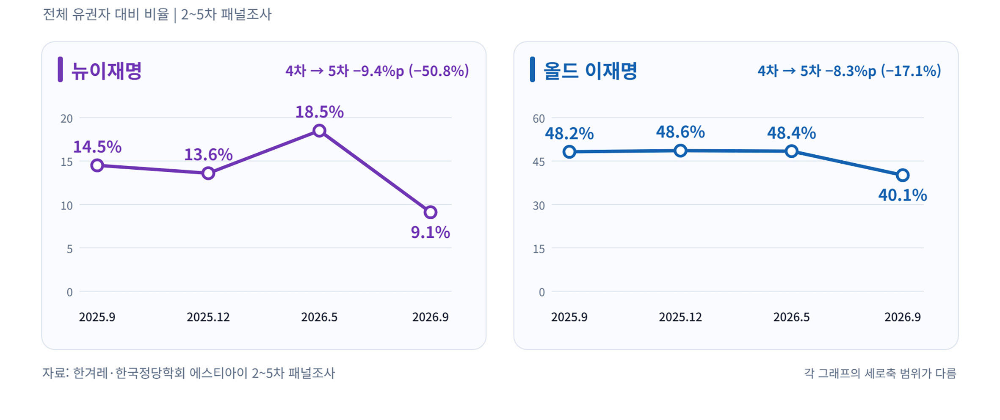
이념적 양극화를 자극하는 정치 담론과 다르게, 민주당 지지자의 가치관을 뜯어보면 상당수는 중도·보수 성향이다. 2024년 11월 여의도연구원이 갤럽에 의뢰해 실시한(65세 미만 대상) ‘정당 관련 인식 조사’는 진보·보수 축선에 자유주의·보수주의 축선을 더해 유권자를 2차원으로 분석했다. 이 조사에서 ‘자유주의 보수’는 18%로 전통적 ‘권위주의 보수’(26%) 못지않게 많았다. 그런데 이들이 지지하는 정당은 민주당(24%)이 국민의힘(23%)을 앞섰고, 개혁신당(7%)과 조국혁신당(6%)이 엇비슷했다. 17%를 차지한 중도층에서도 민주당 지지율(33%)이 가장 높았다. 전체 응답자의 10%가량은 중도·보수이면서 민주당을 지지한다는 결과다.
두 번째 탈이재명 집단인 강성 개혁 성향 유권자 규모는 ‘코어 지지층’이라 자기 규정하는 것과 달리 크지 않다. 한겨레-STI 조사에서 이재명 투표자의 민주당 지지율은 5월 82.5%에서 9월 74.9%로 7.6%P 감소했다. 조국혁신당은 7.1%에서 10.3%로 3.2%P 늘어났다. 전체 응답자의 1.6%P 수준이다. 8월 전당대회를 계기로 비이재명 강성 개혁 집단이 수면 위로 떠올랐고, 상당수가 이탈했다. 하지만 민주당을 뒤흔들 규모라고 보기는 어렵다.
오히려 이들의 문제는 전통적인 민주당 지지층과 사뭇 다른 이질성과 민주·진보 진영을 아우르는 영향력에 있다고 할 것이다. 2022년 민주당 새로고침위원회는 유권자 집단을 6개로 나누면서 전통적 민주당 지지층과 다른 ‘개혁우선 그룹’이 전체 유권자의 6.3%를 차지한다고 봤다. 이들이 2020년 열린민주당, 2024년 조국혁신당을 성공시켰다. 열린민주당 당원이 수도권(전체 당원의 61%), 대졸자(77%), 40~50대(75%), 월 소득 700만 원 이상(32%)에 집중되어 있었던 것에서 확인할 수 있듯, 수도권에서 대기업에 다니는 고소득 화이트칼라들이다. 민주당에 대한 일체감이나 충성도는 낮고, 대신 민주당을 자신들의 ‘개혁 의제’를 집행하는 도구로 본다. 그리고 김어준의 뉴스공장을 비롯한 당 밖 플랫폼으로 조직되고 교육된 ‘깨어있는 시민’이면서, 자신의 정치적 요구를 구체적인 캠페인으로 전개하고 민주당에 관철할 수 있는 실력을 갖추고 있다.
오히려 구조적 진보 이탈층이라 할 만한 세 번째 집단을 눈여겨보아야 한다. 30대 여성이 대표적이다. 갤럽 정례조사를 보면 3월 30대 여성의 대통령 지지는 70%, 반대는 20%였다. 그런데 9월에는 지지가 43%로 줄고, 반대는 48%로 뛴다. 5세 단위로 쪼개어 실시한 다른 여론조사를 보면 40대 초반까지도 여성의 대통령 반대가 급격히 높아진다. 수도권, 특히 서울에서 반대 기류가 강하다.
젊은 여성은 대표적인 진보 지지층으로 꼽혀왔다. 그런데 부동산이 이들을 ‘탈 이재명’의 대표 집단으로 만들었다. 6월 하순 서울에서 갤럽이 머니투데이 의뢰로 실시한 조사에서 이재명 정부가 부동산 정책을 잘못하고 있다고 답한 30대 여성은 54%로 여성 가운데 가장 높았다. 주택 가격만 올라서가 아니다. 아파트는 물론이고 오피스텔·다세대·다가구 등 비아파트 임대료가 상승하면서 생활비 압박이 심해졌다. 결혼하고 첫 집을 마련해야 하는 시기에 주거 사다리를 올라타지 못하는 상황에 직면하게 됐다.
성별 · 연령별 대통령 반대 비율 변화
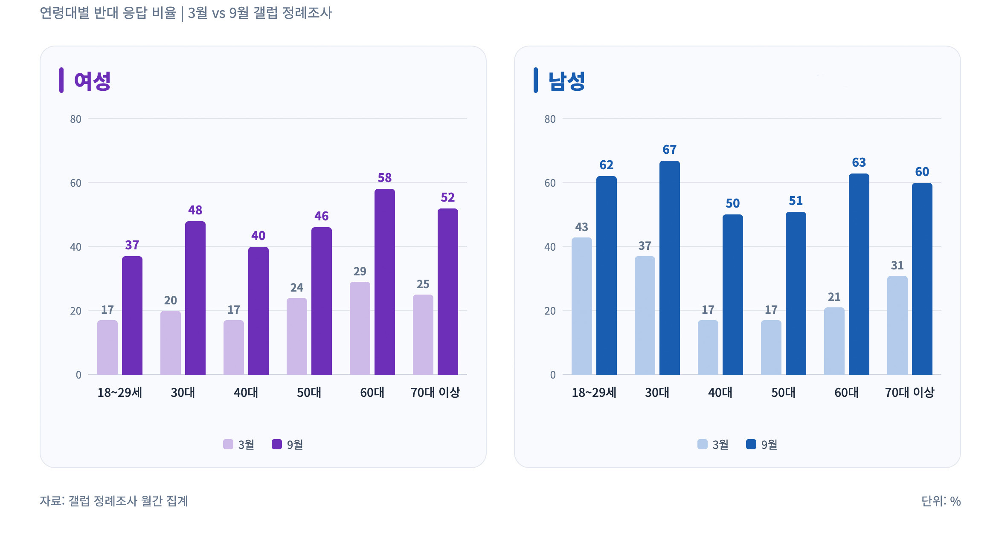
부동산뿐만 아니라 검찰 개혁 이슈도 여성의 이탈을 불렀다. 장윤기 사건 등이 의미하는 것은 단순히 검찰 개혁에 뒤따른 경찰의 독주와 수사 능력 하락 문제가 아니다. 여성들이 민감하게 반응하는 치안과 안전 문제가 서구식 ‘법질서 law and order’ 프레임으로 전환됨을 의미한다. 예전에는 치안과 안전에 관련한 경찰과 검찰의 역할은 정치적인 쟁점이 아니었다. 그래서 관련 사안에 행정력을 발휘하는 민주당 지자체장이 우위를 가졌다. 이제 법질서로 프레임 전환이 이뤄지고, 민주당이 책임을 져야 하는 국면이 됐다. 세대와 자산 축선이 젠더 축선을 압도하게 된 데다, 젠더 축선에서 진보 우위가 무너졌다는 의미다.
젊은 저자산 집단, 특히 고소득-저자산 중산층 유권자의 민주당 이탈 가능성은 2024년 경기도 화성시을 선거구에서 이준석 개혁신당 후보의 당선으로 예고된 바 있다. 젊은 고소득-저자산 중산층은 2002년 대선에서부터 민주당의 핵심 지지 집단이었다. 하지만 이제 불만에 가득찬 유권자층으로 바뀌었다. 30~40대 남성의 탈이재명 현상이 향후 선거에서 반민주당 투표로 이어질 가능성이 높은 이유다. 40대 남성도 3월에는 지지 79%, 반대 17%였는데, 10월에는 지지 46%, 반대 50%로 바뀌었다. 30대 남성(3월 지지 54%, 반대 37%→10월 지지 23%, 반대 67%)도 마찬가지다.
전통적 정렬 구조의 해체
그렇다면 지방선거 이후 대통령과 민주당에 대한 여론은 왜 그렇게 급격히 나빠지게 된 것인가. 이 부분에서 전통적인 유권자의 정렬 alignment 구조가 2016년 4월 총선을 기점으로 해체되기 시작했다는 점이 중요하다. 정렬은 유권자 집단과 정당 사이의 지지 관계가 여러 선거에 걸쳐 안정적으로 유지되는 상태를 뜻한다. 지역, 계급, 세대, 종교, 인종 같은 사회 집단이 특정 정당을 일관되게 지지하고, 그 결합이 선거마다 반복될 때 ‘정렬돼 있다’라고 표현하게 된다. 전통적 정렬 구조가 해체되고 있지만, 새로운 정렬이 만들어지지 않은 상황에서 유권자의 유동성은 극히 높아지게 됐다.
민주당계 정당(이하 민주당)과 보수정당은 지역, 세대, 자산, 역사적 유산에 따라서 비교적 잘 정렬되어 있었다. 민주당은 호남, 20~40대, 저자산층, 민주화의 유산을 대변하는 정당이었고, 보수정당은 영남, 50~70대, 고자산층, 산업화의 유산을 대변했다. 자산은 계급의 대리 지표, 산업화와 민주화는 이데올로기적 상징이었다. 네 가지 축에 따른 정렬 구도는 명확했고, 유권자의 충성도를 높이고 안정된 투표 행태를 끌어내는 강화압력 reinforcing pressures으로 작용했다. 2012년 대선이 이를 보여주는 대표적인 선거다.
하지만 2016년 총선과 2017년 대선을 거치면서 전통적 정렬이 무너졌다. 먼저 지역을 보자. ‘호남’은 민주당을 만든 주인이나 다름없지만, 하위 파트너로 전락하면서 안철수, 조국, 나아가 진보당까지 민주당을 견제할 레버리지로 적극적으로 활용해야 하는 처지가 됐다. 지역에 남아 있는 유권자와 수도권을 비롯한 전국으로 흩어진 이주민 집단의 인적 네트워크가 옅어지면서 수도권의 호남계 이주민과 광주·전남·전북 주민의 정서도 사뭇 달라지게 됐다. 부산·울산·경남 지역의 탈보수 물결은 지난 지선에서 대구까지 확산됐다. 세대는 더 명확하다. 20~40대와 50~60대의 세대 대결 구도 대신 50대~60대 초반까지를 핵심 지지층으로 삼는 민주당, 60대 중반 이후에서 강한 우세인 국민의힘, 그리고 비당파적 유동층으로 그때그때 지지 정당이 다르고 충성도도 낮은 20~30대로 쪼개지게 됐다.
자산 축선에서는 민주당의 핵심 집단인 고소득-저자산 중산층이 고소득-고자산으로 이행하면서, 보수정당과의 차별성이 사라지게 됐다. 특히 저자산 계층을 대변하는 정당이 사라졌다. 차이가 있다면 보수정당은 전통적인 서울 강남 3구의 고가 주택 보유자의 이익을 노골적으로 대변하는 반면, 민주당은 서울 마포·용산·성동 등 이른바 ‘한강벨트’라 불리는 지역의 상위 중산층의 세계관을 투영하고 있다는 것이다.
산업화와 민주화라는 상징도 더는 정치적 동원 기제로 유효하지 않게 됐다. 주간지 『시사IN』이 매년 실시하는 역대 대통령 신뢰도 조사에서, 박정희 전 대통령을 가장 신뢰한다고 꼽은 응답자는 2013년 37.3%에서 올해 21.2%로 줄었다. 노무현 전 대통령을 꼽은 응답자도 2017년 45.3%에서 33.3%로 쪼그라들었다. 산업화와 민주화 모두 이제 먼 과거의 일이다. 1987년 6월 항쟁 당시 한국전쟁은 37년 전의 일이었다. 그런데 2026년 시점에서 6월 항쟁은 39년 전의 일이다. 민주당이 명실상부한 주류 정당이 되면서, ‘비정상적인 권위주의 정부를 정상적인 민주 정부로 바꾸자’라는 핵심 서사는 더 이상 기능하지 않게 됐다.
기존의 정렬은 무너졌지만, 새로운 정렬은 나타나지 않고 있다. 그래서 문재인 대통령 이후 대통령 지지율이 급격히 무너지는 현상이 공통적으로 나타났다. 문재인 정부는 2020년 총선 대승까지만 해도 거칠 것이 없었지만, 2021년 서울시장 재보선을 기점으로 빠르게 무너졌다. 윤석열 정부는 인수위 시절부터 20~30대 남성 유권자의 이탈을 시작으로 지지율이 무너져 내렸다. 이재명 대통령과 민주당의 지지율 하락도 구조적인 원인과 양상은 동일하다.
지지자 연합 유지와 확장이 불가능한 상황
민주당 지지자 연합은 크게 세 덩어리다. 수도권의 화이트칼라 중산층, 호남, 그리고 수도권에 자리 잡은 호남·충청 출신 이주민과 그 자녀 세대다. 연합이 유지되려면 구성원 모두가 받아들일 수 있는 정책의 교집합, 이른바 윈셋 win-set이 있어야 한다. 그런데 이 교집합이 눈에 띄게 좁아졌다.
특히 경기도에 살고 있는 호남 이주민과 그 자녀 세대를 겨냥한 공약은 거의 없었다. 이재명 대통령의 정치적 기반인 원(原)성남 지역이 보여주듯, 이들은 노동자나 영세 자영업자로 사회경제적으로 중하층이다. 그런데 이재명 정부의 정책은 수도권 화이트칼라 중산층이 선호하는 검찰 개혁이나 증시 부양을 한 축으로 삼고, 반도체 공장 신설 등 대규모 개발 의제로 호남을 포섭하는 것을 다른 한 축으로 삼고 있다. 세 집단을 한 번에 묶어줄 수 있는 의제가 없을 뿐만 아니라, 검찰 개혁·호남 반도체 공장 등 한 집단을 겨냥한 정책에 다른 집단이 시큰둥한 양상마저 나왔다. 지난 지방선거에서 의왕·안산처럼 호남계 이주민 2세가 많은 곳에서 국민의힘 후보가 시장에 당선된 배경이다. 그리고 민주당 내부의 갈등은 좀처럼 봉합되지 않고 첨예한 대립 구도를 형성하고 있다.
이 같은 문제에 봉착한 민주당이 고정 지지층만 바라보는 전략으로 일관하는 것은 어찌 보면 자연스러운 결과다. 기존의 상징, 이데올로기, 정책들이 적극적으로 지지자 연합을 확장하거나 구조적으로 이탈하는 집단을 붙잡을 수단을 제공하지 못하기 때문이다. 지방선거에서 드러난 불만의 기저엔 위축된 노동시장, 그리고 반도체 등 몇몇 잘 나가는 산업과 나머지 뒤처진 산업 간의 현격한 격차, 그리고 그에 따른 자산 격차 확대가 있었다. 하지만 지난달 18일 대통령 기자회견과 그 이후 메시지에서 보여주듯 ‘하나 된 민주당’을 강조하는 행보가 이어지고 있다.
기존의 진보 어젠다로 차기 선거 준비 가능한가
민주당의 지지자 연합 와해의 결과 나타난 것은 방대한 비당파 유권자층이다. 전통적인 양당 구도에 자리 잡지 못하는 유권자가 늘어나는 건 진보당에게 기회 요인이다. 반도체 성과급의 수혜를 정면으로 받는 동탄은 물론이고, 안산처럼 어려움을 겪는 전통 제조업 지역에서도 민주당에 대한 불만은 높아지고 있다. 지난 지선 서울의 1인 가구 거주 비율이 높은 빌라나 오피스텔 밀집지에서 민주당 후보들은 고전을 면치 못했다. 향후 선거에서 민주당이 승리하기 어려워질 경우, 광주전남과 전북 지역에서 정치적 대안을 찾는 목소리도 힘을 받을 것이다.
하지만 지금의 상황은 심각한 위기이기도 하다. 진보적인 가치와 상징에 동의하는 유권자가 줄어들고 있기 때문이다. 20~30대에게 80년대 학번-60년대생이 주도하는 기성 체제는 민주·진보 진영 전체를 의미한다. 지금은 평범한 극우 시위로 전락했지만, 올림픽공원 시위 초창기의 참여 방식과 에너지는 ‘반기성세대 운동’으로서 대중적 우파 운동의 가능성을 시사한다.
또한 진보적 경제·사회 의제의 한계도 뚜렷해지고 있다. 과거에 주어졌던 ‘중산층’이라는 사회계약이 더 이상 유효하게 작동하지 않는 데 대한 분노는 탈이재명에서 탈민주·진보 단계로 넘어갈 가능성이 높다. 사회경제적 약자들도 전통적인 진보 의제에 대해 매력을 느끼지 못한다. 이승윤 중앙대 교수는 지난해 발표한 논문(More jobs than social protection?)에서 34세 이하 청년의 정책 선호를 조사·분석했다. ‘기업의 일자리 창출 및 상향 이동 지원(65.4%)’을 선호한다는 응답이 ‘소득 보장(23.3%)’, ‘직업 훈련 강화(11.4%)’를 압도했다. 플랫폼 노동자나 아르바이트생 등 불안정 노동에 종사하는 이들도 마찬가지였다.
결국 지금의 진보 어젠다로 차기 선거를 치르기 어려운 상황이 전개될 가능성이 높다. 비당파 유권자층을 진보당 지지로 끌고 가고 최소한 민주당과의 동반 침몰에서 벗어나기 위해서는 근본적인 전략과 정책의 전환이 필요하다. 나아가 민주화 시대 이후의 새로운 진보의 서사를 만들어 낼 필요가 있다. 이것이 대통령 지지율 급락이 진보당에 던지는 과제일 것이다.
명지대 겸임교수.
서강대 경제학과 박사과정 수료.
저서로 <세습 중산층 사회>, <전라디언의 굴레>, <이탈리아로 가는 길>, <결정적 선거들>(근간)이 있다.
지방 청년에게 필요한 일자리와 도시
비수도권에서 대학을 졸업한 청년은 어떤 일을 할 수 있을까. 공공기관이나 은행, 농협과 새마을금고에 들어가는 길이 있다. 실제로 치열한 경쟁이 벌어지는 분야다. 특히 여학생들이 그렇다. 제조업 대공장 생산직은 하청이나 비정규직에 머물 위험이 높고, 중소기업 사무직은 생산직과 큰 차이 나지 않는 일을 하고 연봉이 최저임금과 크게 차이 나지 않는다. 여성들이 많이 종사하는 사무·서비스·돌봄 일자리, 학교의 조교나 각종 연구원 같은 비정규직도 선택지다. 이마저도 여의치 않으면 물류센터를 알아본다.
내가 지역 청년의 진로를 놓고 거듭 생각해 온 선택지들이다. 여기에 제조업의 연구개발과 엔지니어링, 다양한 전문서비스 일자리를 얼마나 더할 수 있을까. 지역에서 취업한다는 말에는 이 질문이 빠져 있다.
2025년 한 해 수도권으로 순유입된 20대는 약 4만 8천 명이었다. 같은 해 내가 있는 경남에서는 20대 9,129명, 부산에서는 4,510명이 순유출됐다. 순유출 인원이 모두 수도권으로 간 것은 아니지만, 설문조사나 인터뷰로 떠나는 이유를 물으면 많은 경우 일자리, 교육, 문화, 주거 순으로 응답을 한다. 청년이 떠나는 지역과 모이는 지역이 갈리는 현실은 분명하다. 지역을 떠나는 선택을 이해하려면, 학교를 졸업하고 지역에 남았을 때 노동시장에서 어떤 일을 시작하고 그다음에는 무엇을 할 수 있는지 살펴야 한다.
이재명 정부는 8월 28일 ‘청년 성장단계별 종합투자 추진전략’을 발표했다. 정책은 교육과 훈련, 취업과 근속, 주거와 자산 형성, 일상의 회복을 연결한다. 지방 국립대 전액장학금과 비수도권 중소·중견기업 취업 청년 지원금 확대, 청년미래센터를 통한 회복 지원이 포함됐다. 학생들의 등록금과 생활비를 덜어주는 것은 중요하고, 지역의 청년들에게 메리트를 더 주는 것도 분명 도움이 된다. 그러나 지원금이 지급되는 동안 지역의 노동시장과 생활환경이 개선되지 않는다면 단기적으로 소모되는 돈으로 그치고 만다.
취업한 뒤에도 남는 문제
지역 노동시장의 어려움은 들어갈 만한 일자리의 부족에서 시작한다. 취업률을 높이려면 청년들이 눈높이를 낮추고, 학교의 취업센터부터 지역의 인적자원위원회까지 기업과의 매칭을 잘하면 된다는 설명으로는 부족하다. 청년들이 하고 싶은 일의 종류가 없을 때는 눈높이를 낮춘다고 문제가 해결되지 않는다. 게다가 첫 직장에서 무엇을 배우는지에 따라 다음에 지원할 수 있는 직장이 달라지고, 전문성을 인정받을 가능성도 달라진다. 취업은 한 번의 배치로 끝나지 않는다. 지역 취업에 대한 보조금을 받는 것보다 직군을 잘 찾는 것이 평생 소득을 더 크게 좌우한다는 것은 분명하다.
2024년 상반기 지역별고용조사를 바탕으로 한 통계에서 19~39세 고용률은 수도권 72.7%, 부산 67.3%, 경남 66.2%였다. 고용률은 지역의 청년이 일할 기회를 얼마나 얻는지 보여주는 지표지만, 고용률을 높인다고 지역 노동시장 정책을 잘했다고 할 수 없다. 양질의 고용과 복리후생을 제공하고, 적성에 맞는 일자리가 아니라면 장기적인 청년들의 지방살이를 보장할 수 없다. 게다가 취업자라는 같은 이름 아래 놓인 일자리들의 조건은 천양지차다.
대학 졸업자의 첫 진입은 쉽지 않다. 교육부의 2024년도 졸업자 취업통계에서 일반대학 취업률은 전국 62.8%, 부산 59.4%, 경남 59.6%였다. 게다가 학교의 일자리센터를 통해서든, 잡포털을 통해서든 취업했다고 문제가 끝나는 것도 아니다. 근속지원금을 받는 기간을 채우는 동안 업무는 반복되고 임금은 최저임금에 조금 더한 수준에 머무른다면, 오래 일한다는 것의 의미가 빈약해진다. 실제로 지역의 다수를 이루는 중소·중견기업의 연공성은 대기업에 비해 현저히 떨어진다. 시간을 쪼개 대학원에 다니더라도 학위를 어떤 직무와 직급, 연봉으로 인정받을지 막막할 수 있다. 지방 청년들이 배움에 대한 의욕이 없는 것이 아니고, 배우고 경험한 것을 사용할 자리와 보상받을 경로가 잘 보이지 않는 것이다.
정부안의 비수도권 취업 청년 지원금은 연 720만~900만 원, 노동부의 후속 설명으로는 2년간 최대 1,800만 원이다. 기업에 지급하는 채용장려금이나 정부와 기업이 실습비를 절반씩 부담하는 대학생 첫경력 프로젝트와 구분해야 한다. 청년은 소득보전금으로 생활의 부담을 덜고 목돈을 마련할 수 있다. 문제는 지원 기간이 끝난 뒤에도 그 일자리에서 미래를 계획할 수 있는가다. 2026년 5월 청년층 부가조사에서 전국 15~29세 가운데 졸업·중퇴·수료 후 첫 일자리를 임금노동자로 시작한 사람의 첫 직장 평균 근속기간은 1년 6.8개월이었다. 첫 일자리를 그만둔 청년들이 꼽은 가장 큰 이유는 보수와 근로시간 등 근로여건에 대한 불만족으로 44.4%였다. 지역 청년만의 통계는 아니지만, 오래 다니도록 권하기 전에 일터의 조건을 살펴야 한다는 점은 드러난다. 짧은 근속을 청년의 인내 부족으로 읽어서는 곤란하다.
지방으로 올수록 젠더 문제는 커리어의 시작부터 봉쇄를 시작한다. 청년 여성은 원하는 종류의 일을 지역에서 시작하기가 남성에 비해 어렵다. 산업도시에서는 그나마 열려 있는 제조업 생산직 진입 경로가 여성에게 비슷한 폭으로 열려 있지 않다. 연구개발직이나 엔지니어 일자리도 마찬가지다. 공대의 여학생 비중이 4분의 1 수준이지만, 중화학공업에 특화된 동남권의 경우 제조업의 여성 고용은 10% 수준을 넘지 못하는 경우가 부지기수다. 여성을 많이 뽑는 사무·서비스·돌봄 등의 일자리에 들어가더라도 근속이 직급과 임금의 상승으로 연결되지 않는다. 지방의 청년 여성들에게 승진과 이직을 통한 커리어 패스가 없다. 특정한 직무를 선택하려면 수도권으로 가야 한다는 사실을 청년 여성들은 자신의 진로를 결정하는 과정에서 마주한다. SNS를 보고 서울 생활을 동경하는 취향으로 설명할 수 있는 문제가 아니다.
여성의 경력단절을 이야기할 때도 어떤 경력을 말하는지 따져야 한다. 계속 일해도 임금과 지위가 크게 달라지지 않고, 일을 쉬었다가 다시 시작해도 비슷한 저임금 일자리를 찾게 된다면 경력의 지속을 바라보는 조건 자체가 달라진다. 언제든 진출입이 가능하고 연봉이 경력에 따라 큰 차이가 없기에 경력 형성이 되는 지역으로 이주하거나, 지역에서의 구직활동을 단념하기 마련이다. 대공장 금속노조 조합원의 남성생계부양자 경제가 작동하는 게 아니라면, 여성들에게는 젊을수록 ‘지방 탈출’이 유력한 선택지가 될 수밖에 없다.
지방대 장학금 그 이상의 문제
정부에서 제안하는 지방국립대 전액장학금은 지역의 공적 교육기반을 강화하고 학비 부담을 덜어줄 수 있다. 교육부 설명에 따르면 2027학년도 신입생부터 의·약학계열을 제외하고 학자금 지원구간과 무관하게 등록금 전액을 지원할 계획이다. 사립대 지원도 있다. 지방 사립대 지역인재장학금 선발 인원을 4천 명에서 1만 명으로 늘리고, 일반대와 전문대의 성장엔진·첨단분야 인프라에 6천억 원을 지원한다.
그런데 지원이 학생에게 도달하는 방식과 범위가 현저하게 다르다. 국립대에서는 보편적으로 학비를 소멸시키고, 사립대에서는 일부 학생을 선발하거나 특정 분야의 교육시설에 투자한다. 보편복지와 선별복지의 차이다. 상위권 입시뿐만 아니라 국립대 입학의 ‘입결’ 언저리 학생들의 경쟁마저 강화시킬 수 있다. 대학의 장비가 좋아진다고 학생의 부담이 줄어들지 않고, 첨단산업과 직접 연결되지 않는 전공의 학생에게는 아예 해당되지 않는 일이다. 이대로라면 4년제 대학 재학생의 75% 이상을 담당하는 사립대 가운데 서울의 사립대를 제외하면 모두가 심각한 위기에 빠질 수 있다. 지역의 국립대를 못 가서 사립대를 선택하게 만드는 방식으로 지역의 대학교육을 개선할 수 없다.
궁극적으로는 무엇보다 교육받은 청년이 역량을 발휘할 지역의 일자리가 함께 늘어야 한다. 교육 투자가 성공할수록 배운 것을 활용하기 위해 수도권으로 가야 한다면 지역대학을 지원한 성과와 지역 정착의 성과는 갈라질 수 있다. 그렇다고 청년에게 배울 기회를 줄일 수는 없다. 교육의 성과가 지역에서도 쓰이게 할 산업과 기업을 만들어야 한다. 그런데 이 문제야말로 핵심적인 어려움 속에 있다.
지역 청년이 배우고 성장할 수 있는 일자리와 클러스터
양질의 일자리를 공급하려면 우선 기존 중소기업의 우량화와 대형화, 연구개발과 마케팅을 포함한 혁신이 필요하다. 규모가 커진다는 것은 고용인원이나 생산량이 늘어나는 데에만 의미가 있지 않다. 새로운 제품을 기획하고 설계하며 고객을 찾는 기능이 생기고, 그 일을 맡을 전문인력을 지속해서 채용할 수 있어야 한다. 청년에게 필요한 것은 일을 배우고 역량과 책임이 커질수록 대우도 나아지는 조직이다. 당장의 처우만큼 앞으로 배우고 성장할 가능성도 중요하다.
지금까지 제조대기업들이 지방의 사업장을 ‘생산기지’로 전락시켜왔기 때문에 청년에게 열리는 자리의 폭은 점점 좁아져왔다. 대기업의 연구개발과 엔지니어링, 디자인과 마케팅, 제품·서비스 기획 등의 구상 기능을 지역에 확대해야 하지만, 이미 대부분의 고부가가치 구상기능은 수도권에 자리를 잡은 상태다. 대기업에 소재·부품·장비, 혹은 기자재를 공급하는 중소·중견기업의 구상 역량도 떨어진 상황이다. 지역 강소기업의 연구개발을 지원하고 판로를 열어주는 혁신정책을 추진하면서 기업 내부의 학습과 직무 분화, 노동자의 보상체계로 이어지는지 확인해야 한다.
두 번째 경로는 창업기업의 탄생과 성장이다. 지역에도 새로운 기업이 필요하다. 창업한 기업이 시장을 찾고 투자를 받아 규모를 키워야, 창업자와 함께 일할 사람들의 직업적 미래도 생긴다. 모든 청년이 창업자가 될 수는 없고, 성장하는 창업기업에서 청년들이 전문성을 발휘하며 오래 일할 가능성까지 보아야 한다. 스케일업을 할 수 있도록 투자공사나 연계금융을 어떻게 육성할지에 대한 아이디어가 필요하다. 5극 3특 메가시티의 거점도시들에는 창업기업을 지원할 수 있는 서비스 클러스터가 조성되어 있어야 한다.
물론 정부의 종합투자 전략에도 창업 준비와 사업화, 투자와 재도전을 지원하는 내용이 있다. 중소기업 기술혁신개발사업과 스케일업 팁스처럼 기업의 혁신과 성장을 지원하는 제도도 운영된다. 이 정책들을 지역 청년정책과 연결할 필요가 있다. 기업이 성장할 때 지역에서 어떤 기능을 키우고 누구를 채용할지, 대학과 공공 연구기관은 그 과정에 어떻게 참여할지 구체화해야 한다. 청년에게 교육과 창업 준비를 권하는 만큼, 그 역량을 쓰는 조직을 키우는 데에도 책임을 져야 한다.
세 번째는 원하청 간 임금격차를 줄이는 일이다. 하청업체가 인력을 구하지 못하는 문제를 청년의 눈높이 탓으로 돌리기 전에, 공급망 안에서 성과가 어떻게 배분되는지 물어야 한다. 노동자가 하는 일과 숙련에 비해 임금이 낮다면 청년을 오래 붙잡기 어렵다. 사업체 규모에 따른 격차도 완화해야 한다. 노동부의 2025년 고용형태별근로실태조사에서 300인 이상 사업체의 시간당 임금총액을 100으로 놓으면 300인 미만은 57.3이었다. 어느 규모의 사업체에 들어가느냐에 따라 보상의 조건이 크게 갈리는 노동시장에서, 청년 개인에게 근속의 대가를 보태는 것만으로 격차를 메우기는 어렵다. 기업의 혁신과 함께 열위에 있는 노동자의 교섭력이 높아져야 한다.
정부가 추진하는 직무급 도입이 장기적 과제라면, 양대노총의 포괄적인 산별 대각선 교섭은 산업 차원의 공통 요구를 연결할 수 있기에, 당장 추진할 수 있는 핵심 과제다. 올해 3월 10일 시행된 개정 노조법 제2조는 근로조건을 실질적·구체적으로 지배·결정할 수 있는 원청을 그 범위에서 사용자로 인정한다. 제3조는 법원이 조합원 등의 손해배상책임을 인정할 때 개인의 역할과 관여 정도 등을 고려해 책임비율을 정하고, 노동조합과 근로자가 배상액 감면을 청구할 수 있도록 했다. 하청노동자가 근로조건의 실질적 결정권자와 교섭하고 권리를 행사할 제도적 기반이 넓어진 것이다. 이 변화를 어떻게 활용하냐의 문제가 지역 노동시장에서는 더 긴요한 문제일 수 있다.
취업하면 자동차부터 살까 고민하는 지역 청년을 위한 모달 시프트
지역의 취업에는 채용공고에 쓰이지 않은 비용이 있다. 예컨대 부산에서 창원의 직장으로 다니는 경우를 생각해보자. 시외버스가 터미널과 터미널을 잇는다는 사실만으로 통근이 가능해지는 것은 아니다. 중요한 것은 집 문을 나서서 일터 문에 도착할 때까지의 전체 이동이다. 부산의 집에서 터미널까지 가야 하고, 창원에 내려 다시 일터까지 가야 한다. 창원 안의 시내버스 동선이나 배차가 조금만 어긋나도 매일 출근시간을 맞추기 어려워진다. 출퇴근 시간을 조금만 벗어나면 배차 간격은 급격히 늘어난다.
취업하면 자동차부터 마련해야 한다고 청년들과 그들의 부모가 고민한다. 중고차라도 목돈이 필요하고, 차를 유지하는 동안 보험료와 유류비, 주차비도 든다. 청년이 일을 시작하며 자산을 쌓기도 전에 이동수단에 돈을 투입해야 하는 셈이다. 부모가 차를 마련해줄 수 있는 청년과 그렇지 않은 청년의 선택지도 달라질 수 있다. 같은 월급을 주는 일자리라도 출퇴근에 드는 비용을 빼고 나면 실제로 쓸 수 있는 돈은 다르다. 직장에 다닐 수 있더라도 그곳에서 살고 싶어지는지는 별개의 문제다. 자동차로 집과 일터를 왕복하는 생활 속에서 퇴근 후 다른 도시의 친구를 만나거나 강의를 듣고 모임에 참여하기는 어렵다. 가까운 거리에 사람이 있어도 일상적으로 만나기 어려운 것이다. 수도권에서 대중교통으로 직장과 학교, 문화공간과 모임을 오가본 청년에게 지역으로 돌아온다는 것은 이용할 수 있는 일자리와 사회관계를 함께 줄이는 결정일 수 있다.
직주락을 대중교통을 통해 누릴 수 있는 도심권이 필요하다. 일하고, 살고, 여가와 교류를 누리는 기능이 충분히 모여 있어야 하고, 그 중심에 모달 시프트가 있다. 자동차 중심의 이동을 전철과 대중교통 중심으로 옮기는 모달 시프트는 이런 도심권을 연결하는 과제다. 철도 노선을 그리는 것과 더불어 광역 내·광역 간 전철과 BRT 같은 광역 간 버스의 연결, 짧은 환승 간격 설계, 환승 할인, 역에서 일터까지의 연결, 저녁 모임 이후에도 돌아갈 수 있는 운행시간까지 고려해야 작동하는 것이 모달 시프트다.
부산시는 부전~마산 복선전철의 2027년 부분 개통과 2028년 말 전체 개통을 목표로 제시했다. 계획이 실제 생활을 바꾸려면 역과 역 사이의 이동시간뿐 아니라 양쪽 도시 안의 연결을 함께 설계해야 한다. 통근할 수 있는 범위가 넓어지면 지원할 기업이 늘고, 이직할 때마다 거처와 관계를 모두 바꾸어야 하는 부담도 줄일 수 있다. 역세권을 매개로 고부가가치 첨단산업의 구상 기능도 유치할 수 있다.
관계의 밀도를 높여야 하는 지역
고립·은둔 청년 지원도 지역에서 살아갈 조건과 연결된다. 정부는 청년미래센터의 회복 프로그램을 시군구 내 기관 120개소와 연계해 6천 명을 추가 지원하겠다고 밝혔다. 생활권 가까이에서 도움을 받을 수 있도록 하는 방향은 필요하다. 문서도 일상과 관계의 회복을 지원하겠다고 명시한다. 하지만, 위탁 여부만으로 지원의 질을 판단할 수는 없다. 사업 기간이 끝나고 담당자가 바뀔 때 청년이 맺은 관계도 끊어진다면 회복을 담보할 수 없다. 지역기관의 전문성을 활용하되 지방정부가 지속적인 재정과 인력, 사례관리의 연속성을 책임져야 한다. 당장 취업하지 못해도 지원이 이어지고, 잠시 참여를 중단했다가 다시 찾아올 수 있어야 한다.
고립과 은둔을 취업 실패의 결과로만 설명할 수는 없다. 그렇지만 상담과 프로그램을 마친 뒤 청년이 일상으로 돌아갈 지역의 조건을 묻지 않을 수도 없다. 사람을 만나고 활동할 공간, 다시 배우거나 일을 시도할 기회가 함께 있어야 한다. 회복 지원의 성과를 프로그램 참여자 수나 단기 취업 실적으로 서둘러 판정해서는 안 된다. 지속적으로 연결되어 있는 다양한 관계망의 밀도를 높이는 것이 관건이다. 관계망이 단조로워지면 하나에서 끊어질 때마다 고립에 쉽게 노출된다.
지난 정권에서 많은 지방 정부는 저출생 고령화와 지방소멸에 ‘적응’해야 한다며 청년 잡기를 방기하기도 했다. 다시금 청년에게 손을 내밀어야 한다. 그러려면 일을 통해 배우고, 배움이 더 나은 대우로 이어지고, 교류 속에서 다양한 일을 탐색할 수 있고, 때로는 안정적으로 때로는 유연하게 자신의 일을 기획하고 선택할 수 있어야 한다. 지역은 청년들에게 퇴근한 뒤에도 만날 사람과 할 일이 있다는 비전을 보여야만 한다. 기회라는 것이 돈 벌 기회만을 뜻하는 것은 아니다. 그 중심에는 사람들과의 연결이 있다. 메가시티처럼 그게 가능한 최소 규모를 고민할 필요도 있다. 청년에게 남으라고 권하려면 지역도 달라져야 한다.
저자는 한국과학기술원 과학기술정책대학원에서 박사학위를 받았으며 경남대학교 사회학과 교수로 재직하고 있다.
AI, 에너지, 지역이 전환되는 상황에서 노동시장의 변화가 어떻게 벌어지고, 일의 내용과 지역의 생활세계가 어떻게 바뀔지에 관심을 갖고 연구한다.
농지전수조사, 농지의 공공성 확대를 위한 방향으로
2월 24일 대통령이 국무회의에서 “헌법에 경자유전을 써 놓고 온갖 방식으로 위헌행위를 하는 것”, “농사짓겠다고 땅을 사서 안쓰면 매각 대상이고, 안하면(농사를 짓지 않으면) 관리 명령을 하게 되어 있고”, “실제 매각 명령을 해서 팔아버리게 해야지”, “정상적으로 돌려야 한다”라고 발언한다.
그리고 2월 25일 엑스(X)에 “농지 매각 명령은 상속받은 농지나 노령 등으로 불가피하게 묵히는 농지를 대상으로 하는 것이 아니라, 경자유전의 원칙을 이해하지 못하고 투기 목적으로 농사를 짓겠다며 취득하고도 묵히거나 임대차하는 농지를 대상으로 하는 것”이라고 올렸다.
농민운동 진영에서 꾸준히 요구해 온 농지전수조사를 법과 현실적인 어려움을 핑계로 불가능하다고 거부하던 농식품부는 대통령의 요구에 화답하며 3개월 만에 농지전수조사를 시작하는 계획을 제출한다.
이렇게 78년 만에 농지전수조사가 시행되었다. 농지 소유자가 실제로 농사를 짓는지, 남에게 빌려줬는지, 오랫동안 방치하지는 않는지(휴경), 다른 용도로 전용하지는 않았는지를 확인하는 조사이다.
그렇게 지난 5월 18일부터 시작된 농지 전수조사 중 행정정보를 확인하는 단계인 기본조사가 7월 31일까지 마무리되었다. 8월 1일부터 투기 위험군 대상 농지에 대한 현장점검을 통해 법 위반 여부를 확인하는 과정인 심층조사가 시작되었다. 이번 농지전수조사는 농지법이 시행된 1996년 1월 1일 이후 취득한 농지 약 136만 ha를 대상으로 시행되고, 이후 2단계로는 2027년 1996년 이전 취득농지 80만 ha에 대한 조사가 진행될 예정이며, 이를 통해 전체 농지 데이터베이스를 현행화하는 작업을 마무리하겠다는 계획이다.
1차 기본조사 결과 불법 임대차 의심 농지 21.1%, 무단 휴경 의심 농지 11.6%, 불법 전용 의심 9.0%, 소유 제한 위반 농지 1.4%로 27%가 심층조사 대상지역으로 밝혀졌다. 추가 확인 필요 여부를 확인하는 단계로 최종 위법 여부는 심층조사를 통해 판단하게 된다.
농지전수조사로 술렁이는 농촌
농지전수조사 계획이 발표되고, 농지전수조사를 피하는 완벽 대비 노하우를 총정리한 유튜브 동영상이 쏟아져 나오고, 그야말로 속도전으로 진행되는 과정에서 제일 먼저 문제로 거론되었던 것은 임차농 문제였다. 불법 임대차가 적발된 이후에 대한 뚜렷한 대책 없이 불법 임대차 현황을 조사하게 되면 그 피해는 고스란히 임차농이 겪게 될 것이라는 예상은 누구나 가능했다. 농지를 자녀에게 물려주거나 팔 것을 염두에 두고 양도소득세 감면을 위해 정식 계약서를 쓰지 않는 경우를 비롯한 다양한 이유로 계약서 없는 임차농은 농촌에서는 너무 흔한 일이었다. 통계상 임차농지가 50% 정도 된다고 하지만 현장에서는 70% 이상으로 느껴진다.
그동안 계약서 없이 농지를 임대하던 지주들이 조사를 계기로 계약서를 쓰는 것이 아니라, 자신의 요구조건을 들어줄 임차농을 찾아 현재 맺어진 구두 계약을 파기하면서 땅을 떼이게 될 것이라는 우려가 들었다. 그뿐만 아니라 그나마 계약서가 없는 정도 수준에서 적발되지 않도록 아예 대리경작 수준으로 더 나빠질 것이라는 걱정도 있었다. 실제로 지인 중에 농지전수조사로 걱정하는 지주에게 정식으로 계약서를 체결하자고 제안했다가 오히려 지주가 원하는 조건을 들어주겠다는 농민에게로 경작권이 넘긴 사례가 있었다.
특히 친환경농가들은 이미 그동안 친환경으로 가꿔온 농지를 허무하게 빼앗긴 경험이 많아서 더 우려가 컸고, 그래서 임차농 보호법 제정의 필요성을 적극 피력하기도 했다.
1차 농지전수조사 이후, 심층조사로 들어가면서 농지전수조사는 농촌현장을 너머 정치권 정쟁으로도 번지기 시작했다. 송미령 농식품부 장관이 해명하고 나섰지만 국가가 땅을 빼앗는다는 현수막까지 달리며 부정적인 여론은 쉽게 가라앉지 않고 있다.
부정적인 여론 중 대표적인 것이 농지전수조사 때문에 농지가격이 하락하고 농지거래가 위축되어 땅을 팔고 싶어도 팔 수 없다는 것이다. 지방선거가 치러지는 동안에도 끝난 뒤에도 농촌마을에서는 전수조사 때문에 피해를 본 농민들에 의해 여론이 나빠져서 여당이 선거에서 이기지 못했다는 이야기가 지겹도록 오갔다.
그림 1 최근 5년 농지거래 및 가격동향
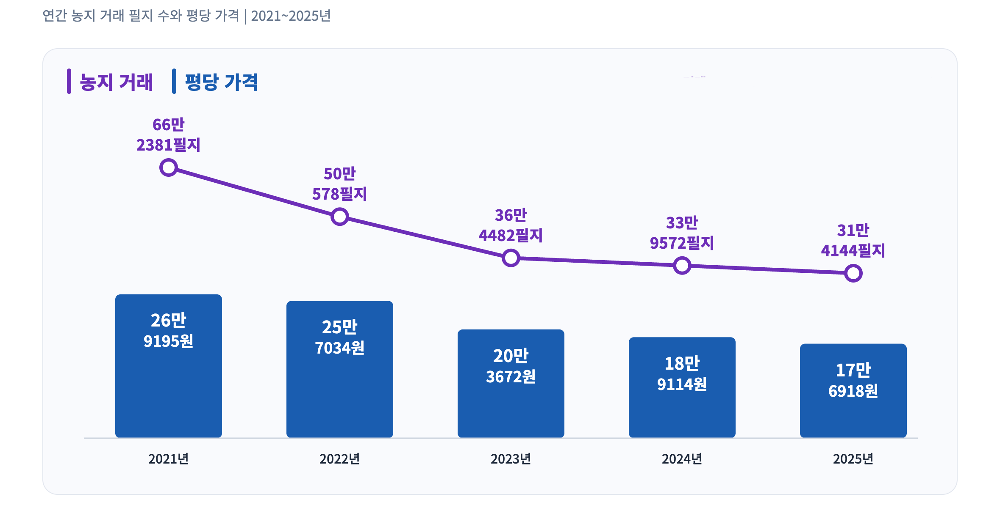
*출처: 농지투기근절과 농지 이용 정상화를 위한 농지제도 전환 대사회 토론회 자료집(2026.3.19.)
하지만 통계에 따르면, 농지거래량은 2021년 66만 2,381필지1였던 거래량은 2025년 31만 4,144필지로 꾸준히 하락해왔다. 평당 농지가격도 2021년 26만 9,195원에서 2025년 17만 6,918원으로 오름세 없이 하락해왔다. 전수조사와 크게 상관이 없이 그동안 계속 그래왔다는 것을 알 수 있다.
농지 매매가 줄어드는 실질적인 원인은 농업과 농촌이 어렵기 때문이다. 농가 인구와 경영주 고령화율이 2024년 잠정적으로 70%까지 올라갔다. 토지용역비와 생산비 증가 추이와 농가소득 추이를 비교해 보면 실제로 농지를 경작해야 할 농민이 농지를 사는 것이 어렵다. 한마디로 농사지어서는 농지를 살 수가 없다.
농업소득으로 농지를 구매하는 데 걸리는 시간을 계산해 보면 대한민국 전체 기준으로 보면 43.1년이 걸리고, 경기도는 123년이 걸린다. 7.7년이 걸리는 프랑스나 11.8년이 걸리는 EU 국가들의 수준을 보면 대한민국 농민이 농지를 산다는 것은 사실상 불가능해 보인다.
그림 2 농업소득으로 농지를 구매하는 데 걸리는 시간
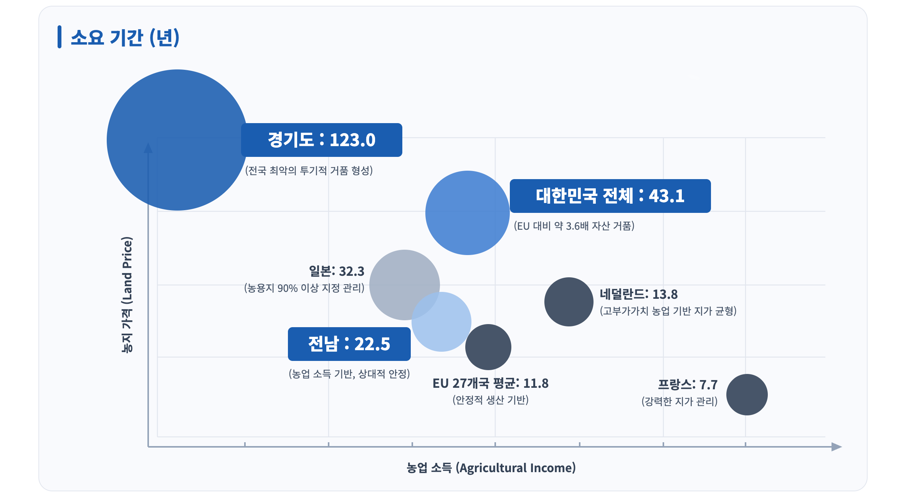
*출처: 농지투기근절과 농지 이용 정상화를 위한 농지제도 전환 대사회 토론회 자료집(2026.3.19.)
우리나라 만 40세 미만의 청년을 대상으로 하는 영농정착자금 대출조건이 5년 거치 20년 상환, 이자 1.3%이다. 필자를 예로 들자면 1억 5천에 700평 남짓 농지를 후계농 대출받아 구매해서 매년 이자는 250만 원 정도 내고 있고, 곧 원금 상환이 돌아온다. 이 농지를 이용해 벌어들이는 소득은 연 이천만 원이 안 된다.2 원금 상환을 몇 년이나 하면서 버틸 수 있을지 가늠도 하기 어렵다. 그나마 40세가 넘는 농민들(청년후계농이 아닌 농민)은 상환에 대한 담보가 되지 않는다는 이유로 자금 대출도 어렵고 이자율도 높아져 대출조차도 엄두를 낼 수 없다. 승계농이거나 대농이면 조건이 좀 다를 수는 있겠지만 농업을 통해 얻는 수익으로 농지를 구매하는 것은 평생을 바쳐도 어려운 일이 되었다.
그리고 농지 문제 관련해서 가장 큰 문제 중 하나인 비농민 농지소유의 원인은 상속이다. 상속농지 면적은 1950년부터 2020년 사이 연평균 5.9% 지속적으로 증가했다. 상속 농지 면적이 높아지면서 농지 매매 거래량을 추월해서 자본에 의해 농지를 확보할 기회가 구조적으로 차단되는 경향이 생겨나고 있다.
‘농지의 공공성 강화’를 농지전수조사의 정확한 목표로 삼아주길
그동안 농지전수조사에 대한 의견을 물어오면 대부분 아쉬운 점과 비판적인 의견을 말해왔지만 지금 상황에서는 중단 없이 진행되어야 한다는 주장에 힘을 실어야 할 것 같다. 그럼에도 제대로 된 전수조사를 위해서는 농지전수조사의 목적을 농업과 농민의 입장에서 정확히 해야 한다.
농식품부의 1차 기본조사 결과 발표를 보면서, 농지전수조사를 진행한 기본적인 이유에 대한 언급이 없어 불편했다. 경자유전의 원칙이 헌법에 적시되어 있고, 농지법이 있음에도 불법이 가능했던 이유에 대한 분석이 없다. 그동안 농지관리를 소홀히 하고 방치했던 것에 대한 반성이 없다. 농식품부는 농지관리를 담당하는 주체 중 하나기도 하지만 불법을 지적만 할 뿐 자신의 역할을 소홀히 했던 것에 대한 검토와 향후 개선에 대한 고민이 없었다. 굳이 이러한 불법이 생겨난 탓을 하자면 농지법을 경자유전의 원칙에서 멀어지도록 개정해 온 서울농민3들에게 화살을 돌려야 하는 것은 아닐까. 정부는 과연 이번 농지전수조사를 무엇을 위해 누구를 위해 하려고 했는지에 대한 고민과 계획이 충분하지 못한 것 같아 불편하고 아쉬움이 컸다.
농지전수조사의 목적은 현재 농지제도의 문제점과 개선방향을 찾는 데 있어야 한다고 생각한다. 농지는 식량을 생산하고 농촌 환경을 유지하기 위한 목적으로 사용되어야 하는데, 그 목적에서 벗어나 문제가 되는 것은 농지전용(국가주도 개발 포함)과 비농민 농지소유(상속 포함)라고 생각한다. 그리고 농지법은 1996년 제정 이후 비농민이 농지소유를 소유할 수 있는 근거를 만들어주고, 농지 개발을 통해 투기할 수 있도록 규제를 완화하는 방향으로 개정됐다. 농지전수조사는 이러한 현실에 제동을 걸고, 법으로 부족한 부분은 무엇인지 행정에서 부족한 것은 무엇인지 찾아내고 바꾸는 데 그 목적이 있어야 한다. 실제로 경작하는 농민의 농지에 대한 접근성이 좋아지도록, 경작권을 보장하기 위해서 필요한 것은 무엇인지 현재 걸림돌은 무엇인지 찾아내야 한다. 더불어 대한민국 농지의 현황과 이용실태를 파악하여 식량주권을 실현하기 위한 기반이 되도록 살펴야 한다.
농지의 공공성을 강화하기 위한 제도 개선의 기반을 마련하는 전수조사
농지전수조사가 농지의 공공성을 강화하고 농민의 경작권을 보장하는 계기가 되길 바란다. 그러기 위해서는 우선 국가가 농지 매입을 전폭적으로 확대해야 한다. 농지는 일반 토지와 달리 식량생산을 위해 이용되어야 하는 목적을 가진 땅이다. 공공성을 가져야 한다는 것이다. 그래서 소유가 공공이어야 민간 소유로 인해 발생하는 문제들이 해결될 수 있다.
농지전수조사로 불법적으로 소유한 농지를 매각한다고 한들 농민들이 살 수가 없는 현실도 문제지만 상속되는 농지도 문제이다. 설사 내 자식이 농사를 짓는다고 해도 다음 세대가 농사를 짓는다는 보장이 없다면 농지 상속으로 발생하는 문제는 고리가 끊이지 않고 반복된다. 국가가 농지를 소유하고 농민에게 장기임대로 경작권을 안정적으로 보장한다면 임차농의 문제를 해결할 수 있을 뿐만 아니라 농업에 유입되자마자 농지 구입으로 억대 빚쟁이가 되어야 하는 청년에게도 진짜 기회를 줄 수 있다.
이는 그동안 농지를 지켜온 고령 농민들에게도 자산의 가치뿐만 아니라 자신의 노력에 대한 보상을 받을 수 있는 기회가 될 것이다. 현재는 농지은행에 땅을 맡기고 싶어도 예산이 없어 몇 년을 기다려야 하는 상황이다. 국가는 전폭적으로 농지를 매수해야 한다. 이번 전수조사를 통해 농지소유 및 이용현황을 파악하여 관련 예산과 매수 계획을 세워야 한다. 더불어 이 과정에서 식량자급율 목표를 채우기 위한 농지 총량제도 법제화가 된다면 더욱 좋겠다.
이러한 과정을 거친다면 농지는 어차피 개인 소유는 물론 투기용으로 사야 할 이유가 사라진다. 농지는 농업을 위한 땅이라는 인식이 자리 잡게 될 것이다. 농지를 더 이상 ‘언젠가 값이 오르면 파는 땅’으로 보유하지 않을 것이다. 농지 투기의 동기가 사라져, 현 정부가 원하는 농지 투기가 근절되는 효과가 생길 것이라 기대한다.
농지전수조사는 목적을 정확하게 하고 중단 없이 진행되어야 한다. 여러 어려움과 부족함이 있지만 이번 농지전수조사로 농지제도에 대한 관심이 높아지고 제도가 조금씩 변하고 있다.
전수조사를 진행하는 과정에서 기존에 1만 ㎡ 이하는 개인 간 임대가 가능한 상속농지에 대해 무조건 농지은행을 통해 임대하도록 제도가 바뀌었다. 앞서 언급한 전수조사가 시작된 뒤 가장 불안해하는 상속농지 소유자들이나 농지를 임대한 고령농들, 그런 농지를 빌려 규모를 키운 규모화된 임차농들의 불안을 해소하기 위해서 정부는 일정 기간 구두 임대차를 서면계약으로 바꾸는 ‘임대차 특별 정비기간’을 운영했고, 정비기간 중 농지 대장에 새로 등재된 임차농지는 1년 전보다 46%, 농지은행을 통한 서면 임대차 계약은 61% 늘었다고 한다. 농지법도 농지 관련 불법행위에 대한 처벌을 강화하는 방향으로 개정되었다. 그동안에는 불법이 적발되어도 현실적인 여러 이유(행정력 부족 등)로 유야무야 되는 경우가 많았으며, 특히 농지법상에 불법이 적발된 농지는 지자체장이 처분명령을 ‘할 수 있다’라고 되어 있어 처벌에 대한 경각심이 낮았다. 농지전수조사를 준비하고 진행하는 과정에서 불법이 적발된 농지에 관해 지자체장이 반드시 처분명령을 하도록 법이 바뀌었으며, 지자체장이 하지 않을 경우 중앙정부가 직접 명령이 가능하도록 했다.
몇 년 전 농지 공공성 강화를 위한 국가매입을 비롯한 주장을 했을 때, 대부분 비현실적이라는 반응을 보였다. 농지는 자산의 성격이 너무 강하고, 농민에게는 유일한 노후자금이라는 인식으로 토론 자체가 어려웠다. 하지만 지금은 국회에서 농지총량제가 논의되고 있고, 전수조사 과정에 농민단체의 의견이 반영되는 성과도 조금씩 있다.
그리고 임차농보호법 도입에 대한 논의가 필요하다. 우선은 현실적으로 농지 임대 기간을 10년 이상으로 보장하고 임대료를 합리적으로 책정할 수 있도록 기준을 만들고 농지 주인이 바뀌어도 기존 계약 내용이 보장되는 등의 내용이 담겨야 한다. 그리고 이후에는 국가 소유의 농지 장기 임대를 위한 내용으로 발전시켜 나가야 할 것이다.
농지관리체계 개선을 위해서는 농어촌공사의 역할과 위상이 어떻게 바뀌어야 하고, 농지관리와 관련된 각 기관의 역할에 대해서도 검토해야 한다. 특히 농지를 취득하는 과정은 품질관리원이, 농지에 대한 정보 및 매매·임대 정보는 농어촌공사가, 이용 및 관리에 대한 부분은 농식품부(면사무소)로 나눠진 구조를 어떻게 개편하여 기관들의 역할을 합치거나 바꿀지 토론할 수 있는 좋은 기회이다. 일각에서 주장하고 있는 ‘농지관리청’을 새롭게 만들어야 하는지, 세 기관 중 한 곳으로 권한과 역할을 확대할 것인지 토론이 필요하다. 그리고 그 과정은 필히 농민 경작자의 의견 수용을 기반으로 해야 할 것이다.
주석
- 1. 필지란 토지의 등록 단위로, 하나의 지번이 붙는 토지의 기본 단위를 말함
- 2. 스마트팜이나 시설을 활용해서 생산력을 높일 수 있지만 시설비 투자 및 유통, 시설작물 가격 등을 고려하면 노지농사 유지가 나을 수 있다는 판단임.
- 3. 서울에 살면서 실제 농사를 짓지는 않지만 농지를 소유하고 있는 사람을 칭함.
저자는 농업현장과 정책연구를 병행하는 농민 연구자다.
“농지의 공공성 확대를 위한 제도 개선 방향에 관한 연구, 농지공개념을 중심으로”라는 주제로 단국대 환경자원경제학 박사를 취득했다.
전국농민회총연맹에서 근무했으며, 농업농민연구소 ‘녀름’의 위촉연구원으로 활동 중이다.
또한 진보당 농민위원으로 활동했으며 현재 강원도 원주에서 농사짓고 연구하는 농민당원이다.
경쟁의 제도화와 ‘선택지의 국력’
미·중 전략경쟁의 새로운 국면과 한국 진보외교의 전략적 자율성
2026년 9월 워싱턴에서 개최된 미·중 정상회담의 정량적 성과표는 표면적으로 무역휴전 연장, 제한적 관세 조정, AI 정례 대화 채널 개설 등 소폭의 합의에 그쳤다. 희토류 공급망 통제, 첨단 반도체 수출규제, 대만해협 및 양안관계 등 근본적 전략 쟁점에서는 여전히 난기류가 지속되고 있다. 그러나 정량적 합의의 크기만으로 회담을 평가하면 미·중 구조의 보다 심층적인 격변을 오독하게 된다. 세계에서 가장 치열하게 경쟁하는 두 나라 정상이 14개월 남짓한 기간에 다섯 차례 대면하게 된다. 냉전기 미소관계에서는 상상하기 어려운 빈도다.
질문은 명확하다. “전략적 대립이 격화되는 상황에서 미·중 정상은 왜 과거보다 더 자주, 주기적으로 만나는가?” 기존의 국제정치학적 패러다임은 이 현상을 설명하는 데 한계를 드러낸다. 세력전이 이론 Power Transition Theory 중심의 고전적 현실주의는 미·중 관계를 패권국과 부상국 간의 불가피한 충돌 과정으로 해석하나, 현실의 미·중은 고도의 정례적 대화 채널을 가동하고 있다. 반면 상호의존론 기반의 자유주의적 접근은 경제적 얽힘이 갈등을 억제한다고 보지만, 양국은 상호의존 자체를 강압 수단으로 거리낌 없이 활용하고 있다.
현 미·중 관계는 단순한 협력과 경쟁의 이분법을 넘어섰다. Farrell & Newman(2019)이 제시한 ‘무기화된 상호의존 weaponized interdependence’은 차단과 통제의 구조화된 네트워크 권력을 잘 설명하지만, 핵심 결절점을 장악한 국가 역시 상대의 보복과 네트워크 단절로 인해 막대한 자국 내 비용 economic and political backfire을 치러야 한다.
본고는 이를 ‘상호취약성의 균형 balance of mutual vulnerability’ 상태로 정의한다.
미중 양국 지도자가 만나는 이유는 상대에 대한 신뢰 때문이 아니라, 서로가 서로에게 치명적 위험 요소가 되었기 때문이다. 따라서 본고의 핵심 명제는 미·중 전략경쟁이 종식이나 화해로 이행하는 것이 아니라, 파국을 막기 위해 경쟁 자체를 규칙과 장치 내에 묶어두는 ‘경쟁의 제도화’ 단계로 이행하고 있다는 점이다.
이러한 정세 변화는 한국 외교에 ‘미국인가 중국인가’라는 이분법적 선택을 넘어서, 미·중이 싸울 때 연루되지 않고 타협할 때 거래되지 않을 수 있는 동력, 즉 ‘선택지의 국력’을 요구하고 있다.
분석적 틀: ‘관리된 경쟁’에서 ‘경쟁의 제도화’로
최근 전개되는 미·중 정상외교는 단발성 이벤트가 아닌 일련의 구조적 연속선상에서 파악되어야 한다. 올해 9월의 워싱턴 회담은 단독 사건이 아니라 작년 11월 부산에서 시작된 연속 과정의 세 번째 장면으로 읽어야 한다. 사진 한 장으로 영화를 평가할 수 없듯, 개별 회담의 성적표만 보면 흐름의 방향을 놓친다.
부산은 보복의 악순환에 브레이크를 거는 일시적 관리 단계였다. 보복관세가 100%를 넘나들며 세계 공급망을 위협하던 무역전쟁을 일단 멈췄다. 이 합의는 문제를 해결한 것이 아니라 충돌의 속도를 늦춘 것이었다.
베이징은 관계가 공멸로 추락하지 않도록 하한선 Floor과 가드레일 Guardrail을 확인하는 단계였다. ‘건설적 전략적 안정’이라는 개념은 양국이 관계의 하한선을 공동으로 확인했다는 뜻이다. 다만 해석은 달랐다. 중국은 협력을 중심에 두고 경쟁을 관리하는 틀로, 미국은 공정성과 호혜성을 전제로 한 안정으로 읽었다. 같은 단어에 다른 의미를 담는 ‘건설적 모호성’이 오히려 합의를 가능하게 했다.
워싱턴은 가드레일 내에 지속 작동 가능한 구체적 의사소통 및 정례 협의 장치를 정착시키는 단계였다. 무역·투자 협의체와 AI 대화 채널은 규모는 작지만, 경쟁을 정상 간 담판에서 상시적 실무 채널로 옮기는 장치다. 휴전 시한을 내년 1월 10일로 잡은 것도 의미심장하다. 올해 11월과 12월의 두 정상회담을 협상 일정 안에 묶어두는 장치이기 때문이다.
각 단계는 단선적·자동적 이행이 아니라 기술경쟁, 대만 문제, 국내정치적 변수 등에 의해 변동될 수 있는 조건부 인과관계이며, 이 흐름이 가리키는 것은 화해도 신냉전도 아닌 제3의 경로, 즉 ‘경쟁의 제도화’다. 본고가 정의하는 ‘경쟁의 제도화’는 전략적 적대감의 해소가 아니라, 경쟁이 완력 충돌이나 파국으로 비화하지 않도록 규칙 rules, 표준 절차 SOPs, 상설 채널을 축적하는 과정이다. 이는 바이든 행정부 시기의 정책 표어였던 ‘관리된 경쟁 managed competition’이 정권과 행위자의 의지에 의존했던 한계를 넘어, 시스템화 및 절차화되는 단계를 말한다.
토머스 셸링(Thomas C. Schelling, 1960)의 고전적 적대적 협상 이론이 시사하듯, 극단적 갈등 관계의 행위자들 사이에도 공멸을 피해야 한다는 교차적 이익 common interest이 존재한다. 냉전기 쿠바 미사일 위기 직후 설치된 ‘핫라인 Hotline’처럼, 경쟁의 제도화는 상대에 대한 불신이 극에 달해 상호 파괴 가능성이 가시화되었을 때 역설적으로 촉발된다.
경쟁의 제도화를 추동하는 3대 구조적 조건
미·중 간 경쟁의 제도화를 이끄는 구조적 조건은 다음의 세 가지로 대별된다.
1. 전략적 교착 Strategic Stalemate
중국의 단선적 패권 추월이나 미국의 완벽한 중국 억제 모두 현실적으로 불가능한 권력의 균형 상태이다. 중국은 전 세계 제조업의 방대한 기반, 거대한 내수 시장, 핵심 광물 및 글로벌 공급망(GVC)의 중심축을 점유하고 있다. 반면 미국은 달러 패권(금융망), 첨단 반도체 생태계, 글로벌 동맹 네트워크 및 절대적 군사력에서 불균등한 우위를 점한다. 양국 모두 상대를 일방적으로 굴복시킬 수 없는 강력한 구조적 견제력을 보유하고 있다.
2. 무기화된 상호의존 Weaponized Interdependence
냉전기 미·소 관계와 달리 미·중은 거미줄처럼 연결된 글로벌 경제 네트워크 속에서 경쟁한다. 특정 결절점 Hub/Panopticon을 통제하는 국가(예: 미국의 SWIFT 금융망 및 EDA 툴, 중국의 희토류 및 배터리 공급망)는 이를 상대방을 압박하는 강압 수단 (Coercive Tools)으로 변환한다. 미국은 첨단 반도체 설계·장비와 달러 금융망을, 중국은 희토류 정제와 범용 제조 공급망을 쥐고 있다. 자유주의 국제정치학이 믿었던 ‘상호의존이 평화를 만든다’는 명제는 이 지점에서 무너진다. 상호의존은 이제 ‘무기화된 상호의존 weaponized interdependence’이다.
3. 상호취약성의 균형 Balance of Mutual Vulnerability
‘무기화된 상호의존’에는 역설이 있다. 상호의존의 무기화는 일방향적 타격으로 끝나지 않는다. 자국이 쥐고 있는 네트워크 결절점을 무기화할 경우, 상대의 보복 조치와 글로벌 경제망의 파괴로 인해 자국 산업과 기업, 소비자 역시 가공할 만한 손실을 입게 된다. 일종의 ‘양날의 검’인 셈이다. 오늘의 미중관계를 지탱하는 것은 신뢰가 아니라 바로 이 ‘상호취약성의 균형’이다. 경제·기술 분야의 상호취약성은 핵 억지 이론의 ‘상호확증파괴(MAD)’와 구조적으로 유사한 ‘자기억제 Self-deterrence의 논리’를 창출하며, 이는 양국 지도자로 하여금 정례적 제도화를 통한 위기 관리에 나설 수밖에 없게 만든다.
‘경쟁의 제도화’의 한계: 평화의 정착인가, 위험의 구조화인가?
토머스 셸링(Thomas C. Shelling, 1960)은 『갈등의 전략 The Strategy of Conflict』에서 국가 간 갈등을 본질적으로 ‘협상’으로 보았다. 서로를 해칠 수 있는 행위자들은 승리를 추구하면서도 공멸을 피할 공통 이익을 갖는다는 것이다. 상호취약성 아래서 미중의 합리적 전략은 상대를 이기려 경쟁하되, 경쟁이 통제불능에 빠지는 것을 막는 것이다.
필자는 이를 바이든 행정부 시기의 ‘가드레일’ 담론, 즉 ‘관리된 경쟁’보다 한 걸음 나아간 ‘경쟁의 제도화’로 규정하고자 한다. 차이는 두 가지다. 첫째, 정상회담이 위기 때 열리는 이벤트가 아니라 정례적 관리 메커니즘이 되었다. 둘째, 관리의 단위가 정상 간 담판에서 협의체·대화채널 같은 상설 장치로 내려가고 있다.
역사적 선례도 있다. 쿠바 미사일 위기 이듬해인 1963년, 미국과 소련이 가장 먼저 만든 것은 군축조약이 아니라 백악관과 크렘린을 잇는 핫라인이었다. 위기 관리의 첫 제도는 평화협정이 아니라 전화선이었다. 워싱턴에서 출범한 AI 대화를 과소평가해서는 안 되는 이유다. 평화는 종종 거창한 협정이 아니라 전화를 끊지 않는 데서 시작된다.
물론 ‘경쟁의 제도화’를 평화체제나 갈등의 근본적 완화로 오인해서는 안 된다.
경쟁의 제도화는 아직 취약한 초기 단계이고 장기화된 냉전을 관리하기 위한 ‘안전장치(난간)’에 불과하며, 아래와 같은 구조적 균열선으로 인해 언제든 흔들릴 수 있다.
대만해협 및 주권 문제
시진핑 주석은 이번 회담에서도 미국이 대만 문제를 ‘신중하게’ 다뤄줄 것을 요구했고, 강대국 간 권력이동이 전쟁으로 이어진다는 ‘투키디데스의 함정’을 다시 언급했다. 정통성과 영토 보전이라는 존립적 가치가 개입될 경우 경제적 비용에 기반한 상호취약성의 자기억제 기제가 무력화될 수 있다.
첨단 핵심기술의 안보화
미국은 첨단 반도체 수출통제를 협상 대상에서 사실상 제외하고 있다. 무역은 관리할 수 있어도 기술패권 경쟁은 제로섬에 가깝다. AI 대화에서도 미국은 규제 최소화를, 중국은 ‘인간의 통제’를 강조해 출발점부터 달랐다. 반도체, AI, 양자컴퓨팅 등 차세대 주도권이 걸린 영역은 ‘상대적 이익 relative gains’이 작용하여 타협이 어렵다.
제3지역 갈등의 전이
미국은 중국이 이란에 대한 금융적 영향력을 행사해주기를 원하지만, 중국은 이에 소극적이다. 중동의 전쟁이 미중관계로 전이될 통로가 열려 있는 셈이다. 중동지역 외에도 우크라이나, 남중국해 등 역외 지정학적 위기가 미·중 직접 대립으로 확산될 위험이 상존한다.
국내정치적 포퓰리즘
트럼프 대통령은 낮은 지지율과 중간선거를, 시진핑 주석은 부동산 침체와 내수 부진을 안고 있다. 양국 지도자 모두 대외적 강경 노선으로 국내 위기를 돌파하려는 유혹에 노출돼 있다. 내부 경제 위기나 선거 국면에서 외부의 적을 설정하고 강경론을 불지피려는 정치적 유혹은 위기관리 제도를 무력화할 수 있다.
결국 경쟁의 제도화는 ‘투키디데스의 함정’을 완전히 제거하는 것이 아니라, 경쟁이 통제 불능의 전면전으로 비화하는 것을 유예하고 관리하는 구조에 가깝다.
따라서 앞으로 주목할 것은 거대한 ‘빅딜’이 아니라 작은 장치들이 얼마나 쌓이는가다. 무역협상의 정례화, AI 관련 소통 채널, 군사당국 간 연락, 대만해협 우발충돌 방지 장치가 축적된다면 경쟁 자체는 없애지 못해도 경쟁이 폭발할 확률은 낮출 수 있다. 반대로 올해 11월과 12월 회담에서 희토류와 관세 문제가 다시 교착되면 내년 1월 10일 휴전 만료는 새로운 충돌의 출발점이 될 수 있다.
한반도의 역설: 열리는 틈과 ‘거래 Deal’의 위험
미·중 전략경쟁의 제도화는 한국 외교에 시사하는 바가 크다. 양국 간 극단적 충돌 가능성이 낮아질 경우 한반도 정세의 예측 가능성이 높아지고 외교적 공간이 열릴 수 있으나, 이것이 자동적으로 한국의 이익으로 귀결되지는 않는다. 미중관계의 안정은 한반도에 외교 공간을 열어주지만, 동시에 한국이 빠진 채 한반도 문제가 거래될 위험도 키운다. 기회와 위험이 같은 구조에서 나온다는 점이 핵심이다.
중국 외교부 발표에 따르면 이번 회담에서 한반도 정세는 중동, 우크라이나와 함께 국제·지역 현안으로 논의됐다. 미중이 충돌할 때 한반도는 대리전의 최전선이 되기 쉽다. 반대로 미중관계가 안정 국면에 들어서면 북한 문제를 군사적 대치가 아닌 외교의 영역으로 끌어올릴 여지가 커진다. 2018년 남북·북미 정상회담 역시 미중 무역전쟁이 본격화되기 직전, 상대적으로 열린 국제환경에서 가능했다는 점을 상기할 필요가 있다.
글렌 스나이더(Glenn H. Snyder, 1984)의 동맹 정치 이론에 따르면, 약소국은 강대국 동맹의 갈등에 말려드는 ‘연루 Entrapment’와 동맹국으로부터 버려지는 ‘방기 Abandonment’의 딜레마를 겪는다. 현 미·중 경쟁의 제도화 국면에서 한국 외교는 여기에 더해 제3의 위험인 ‘거래 Bargaining/Deal의 위험’에 노출된다. 한국 근현대사는 강대국 합의의 대가를 더 깊이 기억한다. 1905년 가쓰라–태프트 밀약은 한국 없는 자리에서 한국의 운명을 정했고, 1945년 38선 분할도 마찬가지였다. 북핵, 주한미군, 미사일방어, 한미연합훈련, 동북아 군비통제가 ‘전략적 안정’이라는 더 큰 거래의 일부가 될 가능성을 배제할 수 없다. 지난 8월 트럼프 대통령의 한미연합훈련 축소 지시는 이 가능성이 결코 추상적이지 않음을 보여준다.
한국의 전략적 선택지: 세 가지 경로의 비교
한국 외교 논쟁에는 크게 세 경로가 경쟁하고 있으며, 미중 경쟁의 제도화 국면에서는 ‘전략적 자율성’ 경로가 상대적으로 유리하다. 다만 각 경로의 논리를 공정하게 이해해야 설득력 있는 대안을 세울 수 있다.
동맹 편승론 Bandwagoning의 문제의식은 가볍게 볼 것이 아니다. 북한의 핵능력이 고도화된 현실에서 억지력의 공백은 치명적일 수 있고, 동맹의 신뢰는 한 번 흔들리면 회복이 어렵다는 지적은 타당하다. 그러나 이 경로는 미중이 대립할 때를 전제로 설계된 전략이다. 미중이 경쟁을 제도화하며 서로 거래하는 국면에서 편승 일변도의 동맹국은 협상 테이블의 주체가 아니라 거래의 대상이 되기 쉽다.
헤징 Hedging은 안보는 미국, 경제는 중국에 의존하는 기존의 이분법을 재현하는 것으로 현실적 타협으로 보이지만, 전략 없는 모호성은 오래가지 못한다. 2016~17년 사드 배치 과정은 모호성이 결국 양쪽 모두의 불신으로 끝날 수 있음을 보여줬다.
전략적 자율성 Strategic Autonomy은 동맹을 기반으로 하되 독자적 선택지를 창출하는 구조적 능력으로 미·중의 강압과 거래 시도에 저항할 외교적 주체성 확보와 고도의 물질적·기술적·외교적 역량 및 국가적 비용을 요구한다.
그렇다면 한국 외교가 받아야 할 시험지는 ‘1번 미국, 2번 중국 중 하나를 고르시오’가 아니다. 진짜 시험문제는 네 가지다. ① 동맹을 유지하면서 우리의 독자적 대중정책을 가질 수 있는가? ② 중국과 협력하면서도 그 압력에는 거절할 수 있는가? ③ 미중이 충돌할 때 휘말리지 않고, 타협할 때 거래되지 않을 수 있는가? ④ 미중의 대화 공간을 한반도 평화의 공간으로 바꿀 수 있는가?
이 네 질문에 답하는 능력이 곧 전략적 자율성이다. 그리고 이러한 전략적 자율성은 일종의 ‘거절의 능력’으로서 다음과 같은 조건의 확보가 요구된다.
첫째, 경제적 대체 가능성 Economic Substitutability. 특정 국가에 대한 경제적 의존도가 무기화되었을 때, 타격을 흡수하고 신속히 대체 시장 및 자원 수급망을 가동할 수 있는 상쇄 능력이다. 자원·에너지·시장 다변화가 핵심이다.
둘째, 산업·기술적 불가결성 Technological Indispensability. 자율성은 단지 의존하지 않는 것에서 나오지 않는다. 상대방 역시 한국의 산업과 기술을 배제할 경우 치명적 손실을 입게 만드는 ‘상호 인질 효과’를 형성해야 한다. 반도체, 이차전지, 조선, 원전, 방산 등의 제조 생태계는 한국을 전략적 거래의 희생양으로 삼지 못하게 만드는 물질적 방패가 된다.
셋째, 외교관계의 다층화 Diplomatic Multi-layering. 미·중 이외에 아세안(ASEAN), 인도, 유럽연합(EU), 중동, 중앙아시아, 글로벌 사우스(Global South) 등과 다층적 외교 관계망을 촘촘히 구축하는 것이다. 네트워크의 분산도가 높을수록 단일 강대국이 한국에 가할 수 있는 강압의 효과는 반감된다.
넷째, 의제형성 능력 및 중견국 연대 Agenda-setting & Coalition. 강대국이 일방적으로 수립한 판에 수동적으로 참여하는 것을 넘어, AI 거버넌스, 공급망 안정을 위한 다자 협력, 기후변화 대응 등 글로벌 의제 설정을 주도하고 중견국 연대를 통해 집단적 발언권을 제도화해야 한다.
한국 진보외교의 재구성: 평화를 선의에서 ‘국가역량’으로
그동안 한국의 진보외교 담론은 평화, 대화, 남북 협력이라는 가치 지향성을 고수해왔으나, 때로 이를 도덕적 당위나 선의의 언어로만 규정했다는 비판에서 자유롭지 못하다. 진보외교는 평화를 도덕적 호소에서 국가전략으로 전환해야 하며, 그 핵심은 ‘선택지의 국력’을 키우는 것이다. 상대가 나와 대화하는 것은 내가 선해서가 아니라 나를 무시하는 비용이 크기 때문이다. 미중이 자꾸 만나는 것도 결국 희토류와 반도체가 대화를 강제했기 때문이다.
한국에도 자산은 있다. 반도체·조선·배터리·원전·방산의 제조 역량, 세계적 문화 영향력, 그리고 미국의 동맹이자 중국의 핵심 교역국이라는 위치다. 문제는 자산의 부재가 아니라 그것을 외교적 지렛대로 조직하지 못하는 데 있다. 국제정치 경제학자 수전 스트레인지의 구분을 빌리면, 한국은 자원은 가졌으나 이를 규칙과 의제를 바꾸는 구조적 권력으로 전환하지 못하고 있다.
따라서 진보외교가 주창해야 할 ‘힘’의 개념은 군비증강이 아니다. 선택할 수 있는 힘이다. 부당한 요구를 거절할 수 있는 힘, 외부 경제 충격과 강압을 견뎌낼 수 있는 힘, 독점적 공급망을 타 시장으로 대체할 수 있는 힘, 다자간 중견국 네트워크를 연결할 수 있는 힘, 한반도 운명을 결정짓는 협상을 창출해낼 수 있는 힘.
이 관점에서 남북관계의 복원 역시 시혜적 평화론이 아닌 ‘선택지의 국력’ 확충이라는 냉정한 국가전략의 일환으로 접근해야 한다. 남북 채널이 전면 차단될수록 한반도 문제에서 주변 강대국의 영향력은 배가되며 한국은 주체성을 상실한다. 반대로 한반도 위기 관리 및 소통 채널을 한국이 독자적으로 쥐고 있을 때, 미·중 구조 속에서 한국은 객체가 아닌 외교적 행위자 Actor로서의 몸값을 높일 수 있다.
또한 한국 단독의 힘만으로 미·중이라는 거대 국가들을 상대하는 것은 한계가 명확하다. 따라서 전략적 자율성의 외연 확장을 위해서는 ‘중견국 연대 Middle-Power Coalitions’가 필수적이다. 아세안, 인도, 호주, EU, 캐나다 등 다수의 중견국들은 미·중 어느 한쪽의 양자택일 강요에 직면해 있으며, 블록화에 동조하지 않으려는 명확한 공동의 이익을 공유한다. 중견국 연대의 목표는 제3의 신냉전 블록을 구축하는 것이 아니다. 패권국의 일방적 강압에 맞서 ‘양자택일을 강요받지 않을 권리’를 조직화하는 것이다.
공급망 다변화 규범, AI 윤리 및 거버넌스, 핵심 광물 클러스터, 해양안보 규칙 수립 등 개별 사안별로 유사입장국 Like-minded countries과 다자간 연대를 도모할 때, 중견국들은 개별적으로 갖지 못했던 ‘구조적 권력의 공동생산 Co-production of Structural Power’을 이루어 낼 수 있다. 이는 동맹을 대체하는 것이 아니라, 동맹을 한층 건전하게 유지하면서도 대중국 취약성을 감소시키는 실질적 안전망으로 기능한다.
결론: ‘선택을 강요받는 국가’에서 ‘선택지를 만드는 국가’로
2026년 9월 워싱턴 미·중 정상회담이 보여준 진실은 전략경쟁의 종식이 아니라 ‘경쟁의 제도화’라는 새로운 규칙의 등장이었다. 양국은 신뢰가 아닌 상호취약성의 균형 속에서 파국을 피하기 위해 대화 장치를 가동하고 있다.
이러한 미·중 관계의 변용은 한국 외교에 준엄한 질문을 던진다. 미·중이 대립할 때 어떻게 불필요한 전쟁 위험과 안보 갈등에 연루되지 않을 것인가? 미·중이 타협할 때 어떻게 국익이 거래 대상으로 전락하는 것을 막을 것인가? 한·미 동맹을 보다 평등하게 유지하면서도 어떻게 독자적인 대중 외교 협상력을 발휘할 것인가?
이 질문에 답할 수 있는 핵심 동력이 바로 ‘선택지의 국력’이다. 공급망 및 시장 다변화, 첨단 산업의 기술적 불가결성, 외교 관계의 다층화, 남북 위기관리 채널의 주도성, 중견국 연대를 통한 규칙 창출이 체계적으로 결합할 때 한국 외교의 전략적 자율성은 비로소 완성된다.
강대국의 힘이 남에게 선택을 강요하는 권력이라면, 중견국 한국의 힘은 강요된 외통수에서 벗어나 새로운 선택지를 스스로 만들어내는 권력이어야 한다. 한국 외교가 풀어야 할 시험지는 더 이상 미국과 중국 사이의 선택문항이 아니라 ‘한국은 스스로 얼마나 정교하고 유능한 제3, 제4의 선택지를 생산해낼 수 있는가’라는 주관식 문항인 셈이다.
진보외교의 새로운 지평 역시 여기에 있다. 평화를 당위에서 국가역량으로, 자주를 구호에서 구조적 기제로, 다변화를 분산에서 연대의 권력으로 전환해야 한다. 강대국이 그린 지도 위에서 선택을 강요받던 수동적 국가에서, 자율적 선택지를 스스로 창출하는 주체적 국가로의 대전환. 이것이 ‘경쟁의 제도화’ 시대에 한국 외교와 진보 진영이 구축해야 할 명확한 국가전략이다.
저자는 동아시아 국제정치와 중국 연구를 전문으로 하는 학자이자 공공 지식인으로, 현재 사단법인 외교광장 부이사장을 맡고 있다.
2010년부터 동아대학교 국제대학 중국학과 교수로 재직하며 교육과 연구를 병행해왔다.
한국교통연구원 책임연구원, 민주평화통일자문회의 상임위원, 제23대 한국현대중국학회 회장을 역임했다.
중국 정치와 외교, 미중 전략경쟁, 동아시아 질서를 연구하며, 주요 매체 기고와 사회대개혁지식네트워크 운영위원장 활동을 통해 공공 지식인으로서 사회참여를 이어가고 있다.
전시작전통제권 환수 여론 지형 분석과 진보정치 과제
‘조건부 대기’ 대신에 ‘독자적 환수’로 대전환해야
1. 전작권 환수의 표류 역사와 2026년의 기로
대한민국 국군에 대한 작전통제권(이하 작통권)은 1950년 7월 이승만 대통령이 맥아더 유엔군사령관에게 서한을 전달한 이래 76년째 온전히 회복되지 못하고 있다. 1994년 평시 작통권이 형식적으로 환수되었으나, 위기관리·작전계획 수립·정보관리 등 핵심 권한이 ‘연합권한위임(CODA)’ 형태로 연합사령관에게 잔류하여 ‘외형적 이양에 불과한 사기극’이라는 비판을 받아왔다.
노무현 정부는 2007년 ‘전략적 전환계획(STP)’을 수립하며 2012년 4월 17일을 기한으로 연합사를 해체하고 독립적인 한미 병렬형 군사협조체계로 복귀하기로 합의했다. 그러나 이명박 정부가 2010년 환수 시한을 2015년 말로 한 차례 연기했고, 이어 박근혜 정부는 2014년 연기된 시한마저 아예 삭제한 채 ‘조건에 기초한 전작권 전환’과 연합사를 존치하는 ‘미래연합사 구상’에 합의했다. ‘한국군 핵심 군사능력 확보’, ‘북핵·미사일 대응능력 구비’, ‘역내 안보환경 조성’이라는 3대 조건과 100여 개 체크리스트 검증 절차는 미국의 승인 없이는 영구히 환수할 수 없는 ‘무기한 지연 장치’로 전락했다. 문재인 정부 역시 이러한 박근혜 정부의 ‘조건부 전환’ 합의를 그대로 계승·조인한 채 미래연합사의 한국군 사령관 보임 합의에 머물렀으며, ‘임기 내 전환’ 약속을 ‘조기 전환’으로 바꾼 뒤 조건 검증의 늪을 벗어나지 못했다. 이어 윤석열 정부에서는 의제 자체가 사실상 폐기되었다.1
현 이재명 정부는 자주국방 기치 아래 ‘임기 내 환수’를 공언하고 있으나, 기존의 ‘조건부 전환’과 ‘미래연합사’ 틀을 온전히 폐기하지 못한 채 안팎의 장벽에 직면해 있다. 미 군부(브런슨 사령관)의 “정치적 편의주의 경계” 발언과 미 의회의 국방수권법(NDAA) 개정 등 외교적 압박 속에서, 정부는 ‘임기 내 완수’라는 정치적 명분과 ‘검증의 덫’이라는 제도적 현실 사이의 딜레마에 갇혀 있다.2
본 보고서는 2026년 10월 진보정책연구원이 에스티아이(STI)에 의뢰해 실시한 정례 여론조사 결과를 토대로 전작권 환수에 관한 유권자 인식 지형을 심층 분석한다. 기존 여론조사들의 문항 설계상 왜곡을 비판적으로 검토하고, ‘조건부 검증의 폐기와 독자적 시한부 환수’에 대한 대중적 지지 기반을 규명함으로써 향후 범여권 연대 및 국방 정책 전환의 정합성을 모색하고자 한다.
2. 기존 여론조사의 문항 편향과 여론 왜곡 메커니즘
전작권 환수 여론은 질문의 프레임과 보기 구성에 따라 극명한 차이를 보여 왔다. 기성 언론과 보수 성향 여론조사는 ‘한미동맹 약화’, ‘안보 공백’, ‘북핵 위협’ 등의 부정적 프레임을 유도 질문에 전제함으로써 보수적 현상유지 여론을 과대대표해 왔다.
1) 기존 주요 여론조사의 프레임 설계 비교
기존의 공개 조사들을 검토하면 여론조사 문항이 현실 정치를 반영하는 방식에서 다음과 같은 뚜렷한 한계와 편향이 드러난다.
① 중앙일보-동아시아연구원(EAI) 조사 (2026. 8.3) 3
‘2027~2028년 전작권 전환’에 대해 52.0%가 긍정적이라고 답했으나, “향후 3~5년 내 군비 증강을 통해 안보적 자립을 달성할 수 있는가”라는 질문을 결합하여 46.4%의 “불가능” 응답을 부각시켰다. 찬성 이유 중 “충분한 준비가 됐다”는 12.8%에 불과하고 “주권국가로서 당연한 일”이 57.8%라는 점을 대비시키며, 군사적 능력 미비를 근거로 한 ‘시기상조론’과 신중론의 근거로 활용되었다.
② 스트레이트뉴스-조원씨앤아이 조사 (2026. 5.4) 4
‘가능한 한 조속히 전환’(36.2%)과 ‘순차적 전환’(29.4%)을 합쳐 65.6%의 압도적 찬성 여론을 보고했다. 그러나 ‘순차적 전환’ 보기가 사실상 현행의 ‘조건부 전환’과 혼재되어 있어, 유권자가 미국의 검증 지연 구조를 인지한 상태에서 전략적 선택을 내렸는지를 식별하지 못했다.
③ 교수신문-사상계 조사 (2026. 7.5) 5
“미국으로부터 전작권을 빠른 시일 안에 환수해야 한다”는 응답이 80.3%에 달해 주권 회복에 대한 압도적 대중적 당위를 확인했다. 그러나 대중의 높은 자주적 지향에도 불구하고, 현행 조건 검증 체계를 어떻게 돌파할 것인가에 대한 실천적·절차적 대안 문항은 결여되어 있었다.
2) 단순 당위론 vs 절차적 현실론의 괴리
유권자들은 “자주국방을 위해 전작권을 환수해야 하는가?”라는 추상적 규범 질문에는 60~80%의 높은 찬성을 보이지만, 미국의 승인 절차나 안보 위험을 언급하는 순간 유예론으로 후퇴하는 경향을 보인다. 이는 질문지가 ‘조건부 전환’이라는 제도의 구조적 한계(일종의 사기극) 드러내지 못했기 때문이다. 따라서 유권자의 진정한 주권적 결단 의지를 측정하기 위해서는 ‘총론적 환수 인식(Q6)’과 함께 ‘검증 절차 자체의 중단 및 독자 환수 여부(Q7)’를 분리하여 질문해야 한다.
3. 2026년 10월 진보정책연구원 × STI 조사 결과 분석 : 전선의 형성과 이념 지형
진보정책연구원·에스티아이(STI)의 2026년 10월 조사(전국 1,000명, 무선 ARS)는 총론적 찬반(Q6)과 각론적 절차(Q7)를 체계적으로 연계 질문함으로써 여론의 심층 구조를 명확히 포착했다.6
표 1 작전통제권 환수인식과 절차 입장 : 2026년 10월_진보정책연구원·에스티아이 (단위: 명, %)
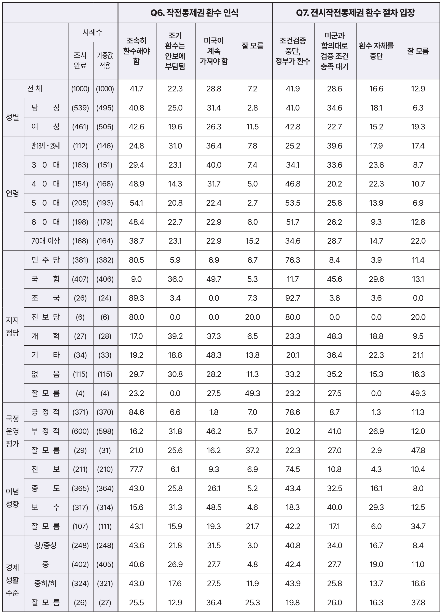
1) ‘조속 환수 41.7%’의 정치학: 뚜렷한 진영 대립과 전선의 명확성
Q6 설문 문항 : 작전통제권 환수 인식
자국 군대에 대한 작전통제권을 다른 나라 군대에 맡겨둔 나라는 대한민국이 유일하다는 지적이 있습니다. 현재 추진 중인 작전통제권 환수에 대해 귀하의 생각과 가장 가까운 것은 무엇입니까?
Q6에서 ‘정부 계획대로 조속 환수’는 41.7%로 집계되었다. 표면적으로는 과반에 미치지 못하지만, 지지 기반을 뜯어보면 대단히 견고한 정치적 전선이 형성되어 있음을 알 수 있다.
민주당(80.5%), 조국혁신당(89.3%), 진보당(80.0%) 지지층과 진보층(77.7%)에서 압도적 쏠림이 확인된다. 반면 국민의힘 지지층에서는 ‘미군 계속 보유’(49.7%)와 ‘검증·동의 후 환수’(36.0%) 등 반대·유예 여론이 85.7%에 달해 완벽한 대척점에 서 있다. 특히 중도층에서 ‘조속 환수’(43.0%)가 ‘검증 후 환수’(25.8%)나 ‘미군 계속 보유’(26.1%)를 오차범위 밖에서 17%p 가까이 앞서고 있다는 사실은 조속 환수론이 중도 지형에서도 우위를 점하고 있음을 실증한다.
그래프 1 전작권 환수 인식(Q6) : 선명한 진영 대립과 중도층의 향방
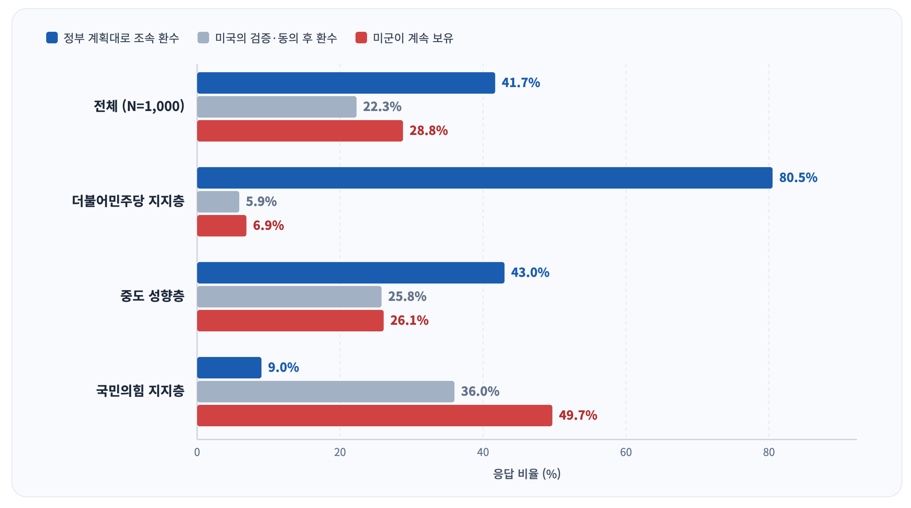
2) ‘검증 중단 및 독자 환수’ 41.9%의 함의
Q7. 설문 문항 : 전시작전통제권 환수 절차 입장
과거 정부가 합의한 ‘조건부 전시작전통제권 전환’ 방식대로라면, 미군이 100여 개 항목을 검증하고 승인해야 합니다. 이 과정에서 환수가 지연될 수 있다며 조건 검증 절차를 중단해야 한다는 주장도 있습니다. 귀하께서는 전시 작전통제권 환수 절차에 대해 다음 중 어떤 입장에 가장 가깝습니까?
Q7은 미국의 100여 개 항목 검증 절차가 환수 지연의 원인임을 적시하고 절차 중단 여부를 물었다.
‘조건 검증 절차를 중단하고 정부가 시한을 정해 독자 환수해야 한다’는 응답이 41.9%로, ‘미군과 합의대로 조건 충족까지 대기해야 한다’(28.6%)를 13.3%p 격차로 크게 앞질렀다. 이는 ‘조건에 기초한 전환’이라는 기존 합의 틀이 사실상 전작권 환수를 가로막는 장애물이라는 점을 질문에서 명시할 경우, 대중 여론이 유예나 대기보다 ‘검증 중단과 독자적 시한부 환수’라는 단호한 결단을 지지함을 보여준다.
그래프 2 전작권 전환 절차 입장(Q7) : ‘조건 대기’를 압도하는 ‘독자 환수’
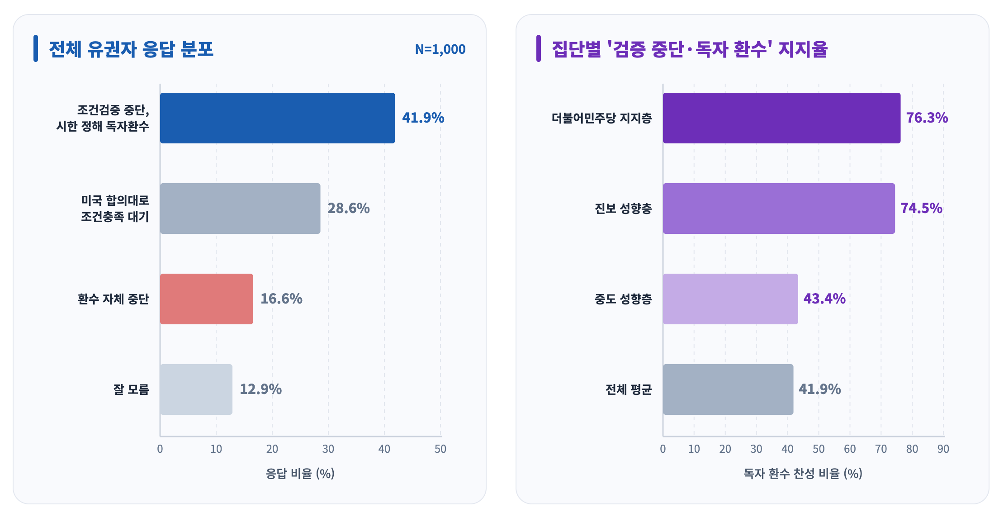
3) 범여권 지지 이탈층의 일체감과 결속 분모
대통령 국정운영 평가에서 이탈한 ‘범여권 지지 이탈층(57명)’은 국정운영 방식에는 54.5%가 ‘매우 잘못하고 있다’며 강하게 비판했다. 그러나 이들의 전작권 인식은 유지층과 일치했다.
Q6 조속 환수에 78.8%가 찬성했고, Q7 조건검증 중단 및 독자 환수에는 82.2%가 찬성하여 국정 유지층(80.8%)과 같은 수준의 높은 주권 의식을 보였다.
이는 전작권 환수 의제가 현재 국정 지지율 하락 국면에서 범여권 지지층과 진보 진영 전체를 다시 묶어세울 수 있는 ‘공통분모’라는 것을 알려준다.
그래프 3 국정 유지층 vs 범여권 이탈층의 전작권 문항 일치도 (Q6 & Q7)
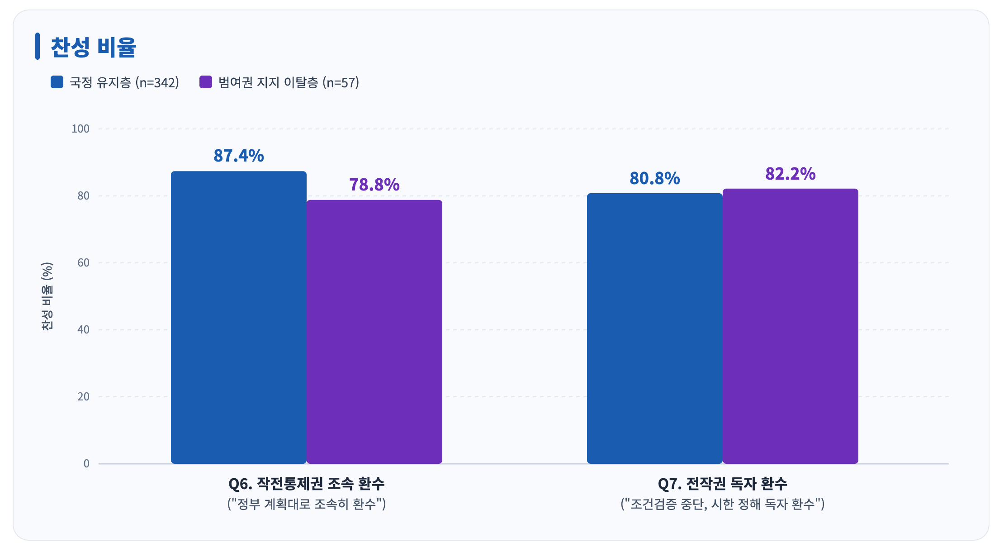
*참고 : ‘국민의힘·무당층 이탈층’의 찬성률은 Q6 27.7%, Q7 30.1%에 불과함
대통령 국정지지 유지층과 이탈층의 분류 기준 : 이 조사는 현재 대통령 국정운영 평가(Q3)와 함께 올해 초 평가를 기억에 의존해 다시 묻고(Q4)7 두 문항을 조합한 결과다.
표 2 대통령 국정지지 유지층과 이탈층의 분류
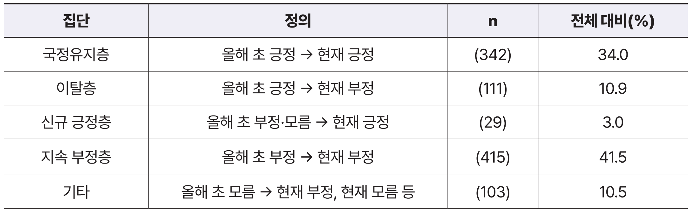
이탈층 111명의 현재 지지정당은 더불어민주당 40.4%, 국민의힘 28.8%, 지지 정당 없음 16.4%, 조국혁신당 10.2% 순이다. 이탈층을 현재 지지정당 기준으로 나누면 성격이 다른 두 집단이 확인된다. 범여권 지지 이탈층은 민주당·조국혁신당·진보당을 지지하면서 국정운영은 부정 평가하는 집단이다. 진보 성향이 62.3%로 유지층(40.3%)보다도 높다. 그 외 이탈층은 현재 국민의힘 지지자와 무당층이 중심이며, 중도 성향이 63.2%이다. 두 집단 모두 ’매우 잘못하고 있다’가 절반 이상이다.
표 3 이탈층의 구성
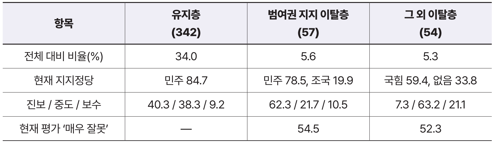
4. 노무현의 길로의 복귀: 왜 ‘조건부 전환’을 폐기하고 ‘독자적 시한부 환수’여야 하는가
문장렬(2026)과 김동엽(2026)이 공통적으로 갈파하듯, 현행 ‘조건에 기초한 전작권 전환’은 논리적·구조적 파탄 상태에 놓여 있다.8
표 4 전작권 환수 구상 및 군사지휘체계 비교
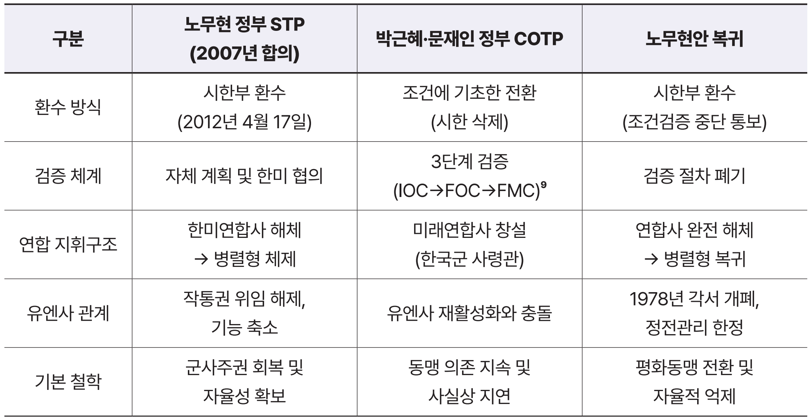
*자료: 문장렬(2026), 김동엽(2026) 참조하여 재구성
1) 충족 불가능한 3대 조건, 결국 무기한 연기론
박근혜 정부가 수용한 3대 조건은 본질적으로 충족 불가능한 과제다. 북핵·미사일에 대한 ‘포괄적 대응능력’을 한국군이 독자적으로 완비하기란 군사적으로 요원하며, ‘안보환경 조성’이라는 조건 역시 검증 연합훈련을 실시할 때마다 남북 간 군사적 긴장이 고조되어 조건 자체가 파기되는 자기모순을 낳는다. 나아가 주한 미군사령관의 공언에서 드러나듯 미군은 조건 평가를 주관하며 언제든 일정을 지연시킬 수 있는 결정권을 쥐고 있다. 결국 미국과의 ‘합의’와 ‘검증’에 매달리는 한 임기 내 환수는 구조적으로 불가능하며, 이는 김동엽 교수의 지적대로 “언젠가 준비되면 환수하겠다”는 논리가 사실상 ‘무기한 연기론’과 동의어인 이유다.
2) ‘미래연합사’ 구상의 한계와 연합사 해체(병렬형 체제)의 필연성
이번 조사 문항에는 직접 포함되지 않았으나, 한국군 4성 장군이 사령관을 맡고 미군 대장이 부사령관을 맡는 이른바 ‘미래연합사’ 구상은 군사적 실효성 측면에서 심각한 구조적 결함을 안고 있다. 비록 이 쟁점은 아직 대중적 공론화 수준이 높지 않지만(그래서 조사항목에 넣지 못했다), 미군이 자국 군대를 외국군 지휘관의 지휘 아래 두지 않는다는 전통적 군사 원칙인 ‘퍼싱 원칙 Pershing Principle’과 정면으로 충돌한다는 점에서 반드시 짚고 넘어가야 할 핵심 사안이다.
유사시 한반도에 전개되는 대규모 미 증원 전력과 핵심 전략자산을 한국군 사령관이 실질적으로 통제하기란 불가능에 가깝다. 결국 실제 작전 지휘권이 미군 부사령관이나 주한미군사령부, 나아가 유엔군사령부로 우회되면서 기형적인 지휘권 충돌과 심각한 지휘계통의 혼선이 발생할 수밖에 없다.
따라서 근본적인 해결책은 노무현 정부가 2007년에 합의했던 원안, 즉 한미연합사를 해체하고 양국 군이 각자 자국군을 독립적으로 지휘통제하는 ‘한미 병렬형 군사협조체계’로 복귀하는 길뿐이다. 한국군에 대한 지휘통제권은 대한민국 합참이 온전히 행사하되, 미군과는 군사위원회(MC) 등 동등한 수준의 협조기구를 통해 연합작전을 조율하는 방식이다. 이미 20년 전인 2006년 버웰 벨 당시 주한 미군사령관이 공식 보고서에서 확인했듯이, 한국군은 한반도 전역에서 벌어지는 대규모 전쟁을 독자적으로 지휘할 수 있는 역량을 충분히 갖추고 있다. 본래 한국군에 대한 작전통제권 환수는 타국 군대와의 타협이나 허락의 대상이 아니라, 대한민국 헌법에 기초한 주권적 결단이자 국가적 선언과 통보의 영역이다.
5. 정치적·전략적 함의: 군사주권 의제의 결속력과 대미 협상력의 재구성
이번 진보정책연구원 × STI 여론조사 데이터는 대미 외교안보 정책이 마주한 구조적 딜레마를 돌파할 수 있는 현실적 정책 지형을 실증적으로 보여준다.
1) 당정 내 ‘조건부 관리론’의 관성과 여론 지형의 괴리 극복
역대 정부의 외교안보 정책 결정 구조에서 실무 관료 그룹과 전문가들은 한미 간 합의의 지속성, 대미 신뢰, 미 군부와의 실무적 마찰 최소화를 이유로 ‘조건의 안정적 검증과 관리’를 기본 기조로 삼아왔다. 이는 안보 현안이 갖는 정보의 비대칭성과 군사 기술적 복잡성으로 인해 자연스럽게 형성된 관성적 정책 경로였다. 또한 정치권 일각에서는 조속 환수나 검증 중단을 공개 천명할 경우 중도층의 안보 불안을 자극해 정치적 부담이 가중될 것이라는 우려를 가져온 것이 사실이다. 그러나 이번 조사는 이러한 관성적 우려가 대중적 여론 지형과 뚜렷한 괴리를 보이고 있음을 확인해 준다.
① 지지 기반의 일관된 요구
민주당(80.5%), 조국혁신당(89.3%)과 이념적 진보층(77.7%), 진보당(80.0%) 지지층에서 조속 환수를 지지하고, 민주당 지지자의 76.3%가 미국의 조건 검증 절차 중단 및 독자 환수를 택했다. 이는 대통령 지지층은 물론 범진보 민주진영 내부에서 전작권 환수가 구호를 넘어선 타협하기 어려운 군사주권의 핵심 원칙으로 자리 잡고 있음을 의미한다. 노무현 정부 이래 20여 년간 학습된 결과로 해석할 수 있다.10
② 중도층의 실용주의적 선택
특히 주목할 대목은 중도층의 인식이다. 중도층에서 ‘검증 중단 및 시한부 독자 환수’(43.4%) 응답은 ‘미국 합의대로 조건 충족 대기’(32.5%)를 오차범위 밖에서 10.9%p 앞섰다. 중도층 유권자들 역시 ‘기약 없는 검증 대기’를 안정적 관리로 보기보다는 실질적인 환수 지연으로 인식하고 있으며, 정부가 명확한 시한을 정해 주도적으로 추진하는 방안에 더 높은 실용적 지지를 보내고 있는 것이다.
③ 정책적 함의
물론 외교안보 사안이 여론 지표만으로 단번에 결정될 수는 없다. 그러나 최소한 “시한 설정이나 검증 재검토가 중도층의 민심 이반을 부른다”는 이른바 정무적 판단이라는 당정 내 억제 논리는 실증적 근거를 잃었다. 이 데이터는 정부가 관료적 타성에 끌려다니지 않고 주권적 결단을 내릴 수 있는 확고한 정치적 공간이 대중 속에 이미 확보되어 있음을 보여준다.
2) 대미 협상 레버리지의 확보와 ‘공약 표류’의 탈출구
이재명 대통령은 ‘자주국방과 임기 내 전작권 환수’를 핵심 공약으로 제시했으나, 주한미군사령관의 “2029년 이후 로드맵” 언급과 미 의회의 국방수권법(NDAA) 강화 등 워싱턴의 지연 기조에 가로막혀 있다. 정부가 기존 ‘조건부 전환(COTP)’ 틀에 묶여 있는 한, 임기 후반부로 갈수록 미국의 평가 기준에 종속되어 공약 자체가 표류할 위험이 크다.
민주주의 국가에서 강력한 국민적 지지는 외교 협상에서 전략적 자산이 된다.
대미 협상 테이블에서 정부가 수동적으로 미국의 검증 잣대에 끌려가는 것이 아니라, “국민 다수가 기약 없는 조건 검증의 중단을 요구하고 있다”는 민심을 대미 레버리지로 적극 활용해야 한다. 그러자면 현재의 여론을 더 빠르게 올려야 한다.
나아가 이번 조사에서 범여권 지지 이탈층의 82.2%가 조건검증 중단과 독자 환수에 확고히 동의하고 있다는 점은 매우 중요한 단서다. 현재 대통령 지지율이 하락한 상황에서, 군사주권과 전작권 환수 의제는 흔들리는 범여권 지지 연합을 복원하고 국정의 주도권을 되찾아올 수 있는 거의 유일한 ‘가치 중심의 최대공약수’다.
따라서 정부는 미 군부의 일정표에 갇힌 수동적 자세에서 탈피하여, 노무현 정부가 합의했던 방식대로 ‘한국군 작통권의 분리 환수 및 2028~2029년 환수 시한 확정 통보’라는 결단으로 협상의 틀 자체를 재설정해야 한다. 이는 대외적으로는 지연 전술을 돌파하는 지렛대이자, 대내적으로는 흩어진 진보 민주 연합을 재결집하는 강력한 정책적 돌파구가 될 것이다.
참고자료 및 문헌
1. 학술 논문 및 정책 연구자료
· 문장렬, 「작전통제권 환수와 한미동맹의 미래」, 『진보정책연구』, 진보정책연구원, 2026년 7월호.
· 조귀동, 「대통령 지지율 급락, 누가 왜 떠났나: 진보당의 위기와 기회」, 진보정책연구원 내부 연구원고, 2026년 10월.
· 대한민국 국방부, 『국방백서』 (1988년, 2008년, 2014년, 2018년, 2022년 각 판).
· 한미안보협의회의(SCM), 「조건에 기초한 전작권 전환 계획(COTP)」 및 「수정 COTP」(2014년, 2018년).
2. 여론조사 및 실증 통계자료
· 진보정책연구원·㈜에스티아이(STI), 『국정과제 및 주요 현안 조사 주요 발견사항 및 결과보고서』 (조사기간: 2026. 10. 6.~10. 7., 전국 만 18세 이상 남녀 1,000명, 무선 ARS).
· 중앙일보·동아시아연구원(EAI), 「한미동맹 및 국방·안보 현안 국민인식조사」 (조사기관: 한국리서치, 2026. 7. 20.~7. 21., 전국 성인 1,547명 웹조사).
· 스트레이트뉴스·조원씨앤아이, 「정기 여론조사: 국정현안 및 전시작전통제권 전환 인식」 (2026. 5. 16.~5. 18., 전국 성인 2,012명 무선 ARS).
· 교수신문·사상계, 「광복 81주년 기획 안보 및 외교 인식 여론조사」 (조사기관: ㈜엠브레인리서치, 2026. 7. 1.~7. 5., 전국 성인 1,000명).
· 한겨레·한국정당학회·STI, 「정치의식 및 대선 패널조사(5차)」 (2026. 9. 15.~9. 20., 전국 성인 유권자 패널).
3. 언론 보도 및 기고문
· (칼럼)김동엽, “[K-피스칼럼] 전시작전통제권 환수, ‘언젠가 준비되면’은 없다: 전작권은 조기에 온전히 환수해야”, 『오마이뉴스』, 2026년 10월 12일자.
· “전작권 전환 긍정 52%… 그 중 ‘준비 됐다’는 13%뿐”, 『중앙일보』, 2026년 8월 10일자.
· “[스트레이트뉴스 여론조사] ‘전작권 전환’ 찬성 65.6%… 보수층선 반대 우세”, 『스트레이트뉴스』, 2026년 5월 20일자.
· “국민 83.5% ‘핵무장 찬성’… 80.3%는 전작권 환수 서둘러야”, 『교수신문』, 2026년 7월 9일자.
주석
- 1. 노무현 정부에서 윤석열 정부에 이르는 역대 정부의 전작권 환수 추진 및 조건부 전환으로의 변질 과정에 대한 역사적 사실관계와 비판적 평가는 문장렬, 「작전통제권 환수와 한미동맹의 미래」, 『진보정책연구』, 진보정책연구원, 2026년 7월호 참조.
- 2. 제이비어 브런슨(Xavier Brunson) 주한미군사령관은 2026년 4월 미 상·하원 군사위원회 청문회에서 전작권 전환과 관련해 “정치적 편의주의가 조건을 앞질러서는 안 된다”며 2029 회계연도 2분기 이전까지 ‘조건 달성을 위한 로드맵’을 제출하겠다고 밝혀 일정 지연 의도를 드러냈다. 또한 미 상원은 2026년 6월 국방수권법(NDAA)을 통해 전작권 전환에 대한 의회 감독 및 인증 절차를 대폭 강화했다. 문장렬, 「작전통제권 환수와 한미동맹의 미래」, 『진보정책연구』, 2026년 7월호, 22쪽 참조.
- 3. 중앙일보-동아시아연구원(EAI) 공동기획, 한국리서치 의뢰, 전국 만 18세 이상 성인남녀 1,547명 웹조사 (2026. 7. 20.~21., 표본오차 95% 신뢰수준 ±2.5%p). 심석용, “전작권 전환 긍정 52%… 그 중 준비 됐다는 13%뿐”, 『중앙일보』, 2026년 8월 10일자 참조.
- 4. 스트레이트뉴스 의뢰, 조원씨앤아이 조사, 전국 만 18세 이상 성인남녀 2,012명 무선 ARS 조사 (2026. 5. 16.~18., 표본오차 95% 신뢰수준 ±2.2%p). 이영태, “[스트레이트뉴스 여론조사] ‘전작권 전환’ 찬성 65.6%… 보수층선 반대 우세”, 『스트레이트뉴스』, 2026년 5월 20일자 참조.
- 5. 교수신문-사상계 기획, ㈜엠브레인리서치 조사, 전국 성인남녀 대상 여론조사. 김재호, “국민 83.5% ‘핵무장 찬성’… 80.3%는 전작권 환수 서둘러야”, 『교수신문』, 2026년 7월 9일자 참조.
- 6. 진보정책연구원 의뢰, (주)에스티아이(STI) 조사, 전국 만 18세 이상 성인남녀 1,000명 무선 ARS 조사 (2026. 10. 6.~7., 표본오차 95% 신뢰수준 ±3.1%p, 응답률 6.4%)
- 7. Q4. 올해 초에는 이재명 대통령의 국정 운영에 대해 어떻게 생각하셨습니까?
- 8. 김동엽, “[K-피스칼럼] 전시작전통제권 환수, ‘언젠가 준비되면’은 없다 - 전작권은 조기에 온전히 환수해야”, 『오마이뉴스』, 2026년 10월 12일자; 문장렬, 앞의 글, 23~28쪽 참조.
- 9. IOC : 최초/기본운용능력, FOC : 완전운용능력, FMC : 완전임무수행능력
- 10. 고 노무현 대통령은 2006년 12월 연설에서 “자기들 나라, 자기 군대, 작전 통제 하나 제대로 할 수 없는 군대를 만들어다 놓고 ‘나 국방장관이요’, ‘나 참모총장이요’ 그렇게 별을 달고 거들먹거리고 말았다는 얘기냐? … 이 수치스러운 일들을 했으면 부끄러운 줄 알아야 합니다”라고 하였다. 관련 영상이 다양한 형태로 유포되며 전작권 환수에 대한 대중적 학습효과를 낳았다.
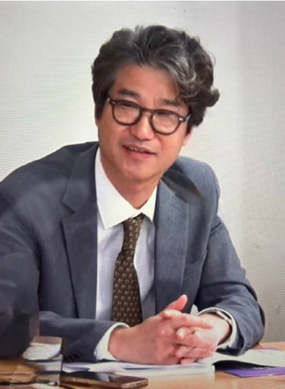
원장